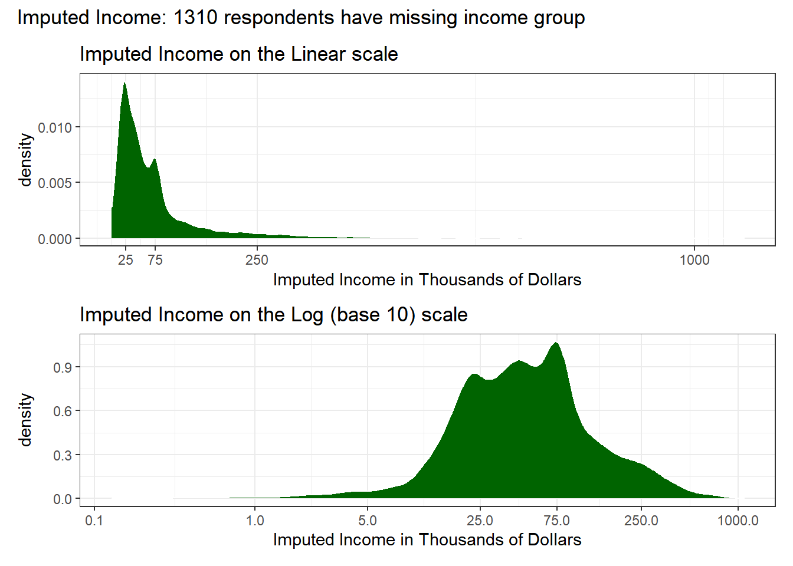

Chapter 2 BRFSS SMART Data Building
The Centers for Disease Control analyzes Behavioral Risk Factor Surveillance System (BRFSS) survey data for specific metropolitan and micropolitan statistical areas (MMSAs) in a program called the Selected Metropolitan/Micropolitan Area Risk Trends of BRFSS (SMART BRFSS.)
In this work, we will focus on data from the 2017 SMART, and in particular on data from the state of Ohio, and from the Cleveland-Elyria, OH, Metropolitan Statistical Area. The purpose of this survey is to provide localized health information that can help public health practitioners identify local emerging health problems, plan and evaluate local responses, and efficiently allocate resources to specific needs.
In this chapter, I describe some cleaning of the BRFSS SMART data, and break it out into national, statewide, and local samples.
The data files produced by this chapter include:
smart_ohio.Rdswhich includes data on approximately 100 variables for over 7000 subjects in six MMSAs that are at least partially located in the state of Ohio.smart_cle.Rdswhich includes data on those same variables for a little over 1000 subjects in the Cleveland-Elyria-Lorain OH MMSA.
2.1 Key resources
- the “raw” data, in the form of the 2017 SMART BRFSS MMSA Data, found in a zipped SAS Transport Format file. The data were released in October 2018.
- the MMSA Variable Layout which simply lists the variables included in the data file
- the Calculated Variables PDF which describes the risk factors by data variable names - there is also an online summary matrix of these calculated variables.
- the lengthy 2017 Survey Questions PDF which lists all questions asked as part of the BRFSS in 2017
- the enormous Codebook for the 2017 BRFSS Survey PDF which identifies the variables by name for us.
Also, for each subject, we are also provided with a sampling weight, in _MMSAWT, which will help us incorporate the sampling design later. These weights are at the MMSA level, and are used for generating MMSA-level estimates for variables in the data set. Details on the weighting methodology are available at this PDF.
2.2 Ingesting the Raw Data
To create the data files we’ll use, I used the read_xpt function from the haven package to bring in the SAS XPT data file that is provided by CDC. The codes I used (but won’t use in these Notes) were:
smart_raw <- read_xpt("MMSA2017/MMSA2017.xpt")This gives the nationwide data, which has 230,875 rows and 177 columns.
But for the purposes of putting these Notes online, I needed to crank down the sample size enormously. To that end, I created a new data file, which I developed by
- importing the MMSA2017.xpt file as above
- filtering away all observations except those from MMSAs which include Ohio in their name, and
- saving the result, which now has 7,412 rows and 177 columns.
The code (again, not run here) that I used to filter to the OH-based MMSAs was:
smart_ohio_raw <- smart_raw %>%
filter(str_detect(MMSANAME, "OH"))
write_csv(smart_ohio_raw, "data/smart_ohio_raw.csv")So, for purposes of these notes, our complete data set is actually coming from smart_ohio_raw.csv and consists only of the 7,412 observations associated with the six MMSAs that include Ohio in their names.
2.3 Ingesting from our CSV file
Note that the smart_ohio_raw.csv and other data files we’re developing in this Chapter are available on our Data and Code website
smart_ohio_raw <- read_csv("data/smart_ohio_raw.csv")
dim(smart_ohio_raw)[1] 7412 1772.4 What does the raw data look like?
Here is a list of all variable names included in this file. We’re not going to use all of those variables, but this will give you a sense of what is available.
names(smart_ohio_raw) [1] "DISPCODE" "STATERE1" "SAFETIME" "HHADULT" "GENHLTH" "PHYSHLTH"
[7] "MENTHLTH" "POORHLTH" "HLTHPLN1" "PERSDOC2" "MEDCOST" "CHECKUP1"
[13] "BPHIGH4" "BPMEDS" "CHOLCHK1" "TOLDHI2" "CHOLMED1" "CVDINFR4"
[19] "CVDCRHD4" "CVDSTRK3" "ASTHMA3" "ASTHNOW" "CHCSCNCR" "CHCOCNCR"
[25] "CHCCOPD1" "HAVARTH3" "ADDEPEV2" "CHCKIDNY" "DIABETE3" "DIABAGE2"
[31] "LMTJOIN3" "ARTHDIS2" "ARTHSOCL" "JOINPAI1" "SEX" "MARITAL"
[37] "EDUCA" "RENTHOM1" "NUMHHOL2" "NUMPHON2" "CPDEMO1A" "VETERAN3"
[43] "EMPLOY1" "CHILDREN" "INCOME2" "INTERNET" "WEIGHT2" "HEIGHT3"
[49] "PREGNANT" "DEAF" "BLIND" "DECIDE" "DIFFWALK" "DIFFDRES"
[55] "DIFFALON" "SMOKE100" "SMOKDAY2" "STOPSMK2" "LASTSMK2" "USENOW3"
[61] "ECIGARET" "ECIGNOW" "ALCDAY5" "AVEDRNK2" "DRNK3GE5" "MAXDRNKS"
[67] "FRUIT2" "FRUITJU2" "FVGREEN1" "FRENCHF1" "POTATOE1" "VEGETAB2"
[73] "EXERANY2" "EXRACT11" "EXEROFT1" "EXERHMM1" "EXRACT21" "EXEROFT2"
[79] "EXERHMM2" "STRENGTH" "SEATBELT" "FLUSHOT6" "FLSHTMY2" "PNEUVAC3"
[85] "SHINGLE2" "HIVTST6" "HIVTSTD3" "HIVRISK5" "CASTHDX2" "CASTHNO2"
[91] "CALLBCKZ" "WDUSENOW" "WDINFTRK" "WDHOWOFT" "WDSHARE" "NAMTRIBE"
[97] "NAMOTHR" "_URBNRRL" "_STSTR" "_IMPSEX" "_RFHLTH" "_PHYS14D"
[103] "_MENT14D" "_HCVU651" "_RFHYPE5" "_CHOLCH1" "_RFCHOL1" "_MICHD"
[109] "_LTASTH1" "_CASTHM1" "_ASTHMS1" "_DRDXAR1" "_LMTACT1" "_LMTWRK1"
[115] "_LMTSCL1" "_PRACE1" "_MRACE1" "_HISPANC" "_RACE" "_RACEG21"
[121] "_RACEGR3" "_AGEG5YR" "_AGE65YR" "_AGE80" "_AGE_G" "WTKG3"
[127] "_BMI5" "_BMI5CAT" "_RFBMI5" "_EDUCAG" "_INCOMG" "_SMOKER3"
[133] "_RFSMOK3" "_ECIGSTS" "_CURECIG" "DRNKANY5" "_RFBING5" "_DRNKWEK"
[139] "_RFDRHV5" "FTJUDA2_" "FRUTDA2_" "GRENDA1_" "FRNCHDA_" "POTADA1_"
[145] "VEGEDA2_" "_MISFRT1" "_MISVEG1" "_FRTRES1" "_VEGRES1" "_FRUTSU1"
[151] "_VEGESU1" "_FRTLT1A" "_VEGLT1A" "_FRT16A" "_VEG23A" "_FRUITE1"
[157] "_VEGETE1" "_TOTINDA" "_MINAC11" "_MINAC21" "_PACAT1" "_PAINDX1"
[163] "_PA150R2" "_PA300R2" "_PA30021" "_PASTRNG" "_PAREC1" "_PASTAE1"
[169] "_RFSEAT2" "_RFSEAT3" "_FLSHOT6" "_PNEUMO2" "_AIDTST3" "_MMSA"
[175] "_MMSAWT" "SEQNO" "MMSANAME"2.5 Cleaning the BRFSS Data
2.5.1 Identifying Information
The identifying variables for each subject are gathered in SEQNO, which I’ll leave alone.
Each statistical (geographic) area is identified by a
_MMSAvariable, which I’ll renamemmsa_code, and by anMMSANAMEwhich I’ll rename asmmsa_nameFor each subject, we are also provided with a sampling weight, in
_MMSAWT, which will help us incorporate the sampling design later in the semester. We’ll rename this asmmsa_wt. Details on the weighting methodology are available at https://www.cdc.gov/brfss/annual_data/2017/pdf/2017_SMART_BRFSS_MMSA_Methodology-508.pdf
smart_ohio_raw <- smart_ohio_raw %>%
mutate(mmsa_code = `_MMSA`,
mmsa_name = `MMSANAME`,
mmsa_wt = `_MMSAWT`)
smart_ohio_raw %>% count(mmsa_code, mmsa_name)# A tibble: 6 x 3
mmsa_code mmsa_name n
<dbl> <chr> <int>
1 17140 Cincinnati, OH-KY-IN, Metropolitan Statistical Area 1737
2 17460 Cleveland-Elyria, OH, Metropolitan Statistical Area 1133
3 18140 Columbus, OH, Metropolitan Statistical Area 2033
4 19380 Dayton, OH, Metropolitan Statistical Area 587
5 26580 Huntington-Ashland, WV-KY-OH, Metropolitan Statistical Area 1156
6 45780 Toledo, OH, Metropolitan Statistical Area 766Those names are very long. I’ll build some shorter ones, by dropping everything after the comma.
smart_ohio_raw <- smart_ohio_raw %>%
mutate(mmsa = str_replace_all(string = mmsa_name, pattern="\\,.*$",replacement=" "))
smart_ohio_raw %>% count(mmsa, mmsa_name)# A tibble: 6 x 3
mmsa mmsa_name n
<chr> <chr> <int>
1 "Cincinnati " Cincinnati, OH-KY-IN, Metropolitan Statistical Area 1737
2 "Cleveland-Elyria " Cleveland-Elyria, OH, Metropolitan Statistical Area 1133
3 "Columbus " Columbus, OH, Metropolitan Statistical Area 2033
4 "Dayton " Dayton, OH, Metropolitan Statistical Area 587
5 "Huntington-Ashlan~ Huntington-Ashland, WV-KY-OH, Metropolitan Statisti~ 1156
6 "Toledo " Toledo, OH, Metropolitan Statistical Area 766And here are the sampling weights for the subjects in the Cleveland-Elyria MSA.
smart_ohio_raw %>%
filter(mmsa_code == 17460) %>%
ggplot(., aes(x = mmsa_wt)) +
geom_histogram(bins = 30, fill = "blue", col = "white")2.5.2 Survey Method
2.5.2.1 DISPCODE and its cleanup to completed
DISPCODE which is 1100 if the subject completed the interview, and 1200 if they partially completed the interview. We’ll create a variable called completed that indicates (1 = complete, 0 = not) whether the subject completed the interview.
smart_ohio_raw <- smart_ohio_raw %>%
mutate(completed = 12 - (DISPCODE/100))
smart_ohio_raw %>% count(DISPCODE, completed)# A tibble: 2 x 3
DISPCODE completed n
<dbl> <dbl> <int>
1 1100 1 6277
2 1200 0 11352.5.2.2 STATERE1 and SAFETIME and their reduction to landline
BRFSSS is conducted by telephone. The next two variables help us understand whether the subject was contacted via land line or via cellular phone.
STATERE1is 1 if the subject is a resident of the state (only asked of people in the land line version of the survey).SAFETIMEis 1 if this is a safe time to talk (only asked of people in the cell phone version of the survey).- We’ll use
STATERE1andSAFETIMEto create an indicator variablelandlinethat specifies how the respondent was surveyed (1 = land line, 0 = cell phone), as follows…
smart_ohio_raw <- smart_ohio_raw %>%
mutate(landline = replace_na(STATERE1, 0))
smart_ohio_raw %>% count(STATERE1, SAFETIME, landline)# A tibble: 2 x 4
STATERE1 SAFETIME landline n
<dbl> <dbl> <dbl> <int>
1 1 NA 1 3649
2 NA 1 0 37632.5.2.3 HHADULT and its cleanup to hhadults
HHADULTis the response to “How many members of your household, including yourself, are 18 years of age or older?”- The permitted responses range from 1-76, with special values 77 for Don’t Know/Not Sure and 99 for refused, with BLANK for missing or not asked.
- So we should change all numerical values above 76 to NA for our analyses (the blanks are already regarded as NAs by R in the ingestion process.)
smart_ohio_raw %>% tabyl(HHADULT) HHADULT n percent valid_percent
1 274 0.0369670804 0.236206897
2 603 0.0813545602 0.519827586
3 170 0.0229357798 0.146551724
4 73 0.0098488937 0.062931034
5 28 0.0037776579 0.024137931
6 4 0.0005396654 0.003448276
7 3 0.0004047491 0.002586207
8 1 0.0001349164 0.000862069
10 1 0.0001349164 0.000862069
11 1 0.0001349164 0.000862069
99 2 0.0002698327 0.001724138
NA 6252 0.8434970318 NAsmart_ohio_raw <- smart_ohio_raw %>%
mutate(hhadults = HHADULT,
hhadults = replace(hhadults, hhadults > 76, NA))
smart_ohio_raw %>% count(HHADULT, hhadults) %>% tail()# A tibble: 6 x 3
HHADULT hhadults n
<dbl> <dbl> <int>
1 7 7 3
2 8 8 1
3 10 10 1
4 11 11 1
5 99 NA 2
6 NA NA 62522.5.3 Health Status (1 item)
The next variable describes relate to the subject’s health status.
2.5.3.1 GENHLTH and its cleanup to genhealth
GENHLTH, the General Health variable, which is the response to “Would you say that in general your health is …”- 1 = Excellent
- 2 = Very good
- 3 = Good
- 4 = Fair
- 5 = Poor
- 7 = Don’t know/Not sure
- 9 = Refused
- BLANK = Not asked or missing
To clean up the GENHLTH data into a new variable called genhealth we’ll need to
- convince R that the 7 and 9 values are in fact best interpreted as NA,
- and perhaps change the variable to a factor and incorporate the names into the levels.
smart_ohio_raw <- smart_ohio_raw %>%
mutate(genhealth = fct_recode(factor(GENHLTH),
"1_Excellent" = "1",
"2_VeryGood" = "2",
"3_Good" = "3",
"4_Fair" = "4",
"5_Poor" = "5",
NULL = "7",
NULL = "9"))
smart_ohio_raw %>% count(GENHLTH, genhealth)# A tibble: 7 x 3
GENHLTH genhealth n
<dbl> <fct> <int>
1 1 1_Excellent 1057
2 2 2_VeryGood 2406
3 3 3_Good 2367
4 4 4_Fair 1139
5 5 5_Poor 428
6 7 <NA> 10
7 9 <NA> 52.5.5 Health Care Access (4 items)
The next four variables relate to the subject’s health care access.
2.5.5.1 HLTHPLN1 and its cleanup to healthplan
HLTHPLN1, the Have any health care coverage variable, is the response to “Do you have any kind of health care coverage, including health insurance, prepaid plans such as HMOs, or government plans such as Medicare, or Indian Health Service?”
- 1 = Yes
- 2 = No
- 7 = Don’t know/Not sure
- 9 = Refused
To clean up the HLTHPLN1 data into a new variable called healthplan we’ll
- convince R that the 7 and 9 values are in fact best interpreted as NA,
- and turn it into an indicator variable, e.g., we will leave the variable as numeric, but change the values to 1 = Yes and 0 = No.
smart_ohio_raw <- smart_ohio_raw %>%
mutate(healthplan = HLTHPLN1,
healthplan = replace(healthplan, healthplan %in% c(7, 9), NA),
healthplan = replace(healthplan, healthplan == 2, 0))
smart_ohio_raw %>% count(HLTHPLN1, healthplan)# A tibble: 4 x 3
HLTHPLN1 healthplan n
<dbl> <dbl> <int>
1 1 1 6994
2 2 0 398
3 7 NA 10
4 9 NA 102.5.5.2 PERSDOC2 and its cleanup to hasdoc and to numdocs2
PERSDOC2, the Multiple Health Care Professionals variable, is the response to “Do you have one person you think of as your personal doctor or health care provider?” where if the response is “No,” the survey then asks “Is there more than one or is there no person who you think of as your personal doctor or health care provider?”
- 1 = Yes, only one
- 2 = More than one
- 3 = No
- 7 = Don’t know/Not sure
- 9 = Refused
- BLANK = Not asked or missing
To clean up the PERSDOC2 data into a new variable called hasdoc we’ll
- convince R that the 7 and 9 values are in fact best interpreted as NA,
- and turn it into an indicator variable, e.g., we will leave the variable as numeric, but change the values to 1 = Yes and 0 = No, so that the original 1 and 2 become 1, and the original 3 becomes 0.
smart_ohio_raw <- smart_ohio_raw %>%
mutate(hasdoc = PERSDOC2,
hasdoc = replace(hasdoc, hasdoc %in% c(7, 9), NA),
hasdoc = replace(hasdoc, hasdoc %in% c(1, 2), 1),
hasdoc = replace(hasdoc, hasdoc == 3, 0))
smart_ohio_raw %>% count(PERSDOC2, hasdoc)# A tibble: 5 x 3
PERSDOC2 hasdoc n
<dbl> <dbl> <int>
1 1 1 5784
2 2 1 623
3 3 0 990
4 7 NA 14
5 9 NA 12.5.5.3 MEDCOST and its cleanup to costprob
MEDCOST, the Could Not See Doctor Because of Cost variable, is the response to “Was there a time in the past 12 months when you needed to see a doctor but could not because of cost?”
- 1 = Yes
- 2 = No
- 7 = Don’t know/Not sure
- 9 = Refused
- BLANK = Not asked or missing
This is just like HLTHPLAN.
smart_ohio_raw <- smart_ohio_raw %>%
mutate(costprob = MEDCOST,
costprob = replace(costprob, costprob %in% c(7, 9), NA),
costprob = replace(costprob, costprob == 2, 0))
smart_ohio_raw %>% count(MEDCOST, costprob)# A tibble: 4 x 3
MEDCOST costprob n
<dbl> <dbl> <int>
1 1 1 714
2 2 0 6680
3 7 NA 14
4 9 NA 42.5.5.4 CHECKUP1 and its cleanup to t_checkup
CHECKUP1, the Length of time since last routine checkup variable, is the response to “About how long has it been since you last visited a doctor for a routine checkup? [A routine checkup is a general physical exam, not an exam for a specific injury, illness, or condition.]”
- 1 = Within past year (anytime less than 12 months ago)
- 2 = Within past 2 years (1 year but less than 2 years ago)
- 3 = Within past 5 years (2 years but less than 5 years ago)
- 4 = 5 or more years ago
- 7 = Don’t know/Not sure
- 8 = Never
- 9 = Refused
- BLANK = Not asked or missing
To clean up the CHECKUP1 data into a new variable called t_checkup we’ll
- convince R that the 7 and 9 values are in fact best interpreted as NA,
- relabel options 1, 2, 3, 4 and 8 while turning the variable into a factor.
smart_ohio_raw <- smart_ohio_raw %>%
mutate(t_checkup = fct_recode(factor(CHECKUP1),
"1_In-past-year" = "1",
"2_1-to-2-years" = "2",
"3_2-to-5-years" = "3",
"4_5_plus_years" = "4",
"8_Never" = "8",
NULL = "7",
NULL = "9"))
smart_ohio_raw %>% count(CHECKUP1, t_checkup)# A tibble: 7 x 3
CHECKUP1 t_checkup n
<dbl> <fct> <int>
1 1 1_In-past-year 5803
2 2 2_1-to-2-years 714
3 3 3_2-to-5-years 413
4 4 4_5_plus_years 376
5 7 <NA> 68
6 8 8_Never 32
7 9 <NA> 62.5.6 Blood Pressure (2 measures)
2.5.6.1 BPHIGH4 and its cleanup to bp_high
BPHIGH4 is asking about awareness of a hypertension diagnosis. It’s the response to the question: “Have you EVER been told by a doctor, nurse or other health professional that you have high blood pressure?” In addition, if the answer was “Yes” and the respondent is female, they were then asked “Was this only when you were pregnant?”
The available codes are:
- 1 = Yes
- 2 = Yes, but female told only during pregnancy
- 3 = No
- 4 = Told borderline high or pre-hypertensive
- 7 = Don’t know/Not sure
- 9 = Refused
- BLANK = Not asked or missing
To clean up the BPHIGH4 data into a new variable called bp_high we’ll
- convince R that the 7 and 9 values are in fact best interpreted as NA,
- relabel (and re-order) options 1, 2, 3, 4 while turning the variable into a factor.
smart_ohio_raw <- smart_ohio_raw %>%
mutate(bp_high = fct_recode(factor(BPHIGH4),
"0_No" = "3",
"1_Yes" = "1",
"2_Only_while_pregnant" = "2",
"4_Borderline" = "4",
NULL = "7",
NULL = "9"),
bp_high = fct_relevel(bp_high,
"0_No", "1_Yes",
"2_Only_while_pregnant",
"4_Borderline"))
smart_ohio_raw %>% count(BPHIGH4, bp_high)# A tibble: 6 x 3
BPHIGH4 bp_high n
<dbl> <fct> <int>
1 1 1_Yes 3161
2 2 2_Only_while_pregnant 67
3 3 0_No 4114
4 4 4_Borderline 49
5 7 <NA> 19
6 9 <NA> 22.5.6.2 BPMEDS and its cleanup to bp_meds
BPMEDS is the response to the question “Are you currently taking medicine for your high blood pressure?”
- 1 = Yes
- 2 = No
- 7 = Don’t know/Not sure
- 9 = Refused
- BLANK = Not asked or missing
To clean up the BPMEDS data into a new variable called bp_meds we’ll treat it just as we did with HLTHPLN1 and
- convince R that the 7 and 9 values are in fact best interpreted as NA,
- and turn it into an indicator variable, e.g., we will leave the variable as numeric, but change the values to 1 = Yes and 0 = No.
smart_ohio_raw <- smart_ohio_raw %>%
mutate(bp_meds = BPMEDS,
bp_meds = replace(bp_meds, bp_meds %in% c(7, 9), NA),
bp_meds = replace(bp_meds, bp_meds == 2, 0))
smart_ohio_raw %>% count(BPMEDS, bp_meds)# A tibble: 5 x 3
BPMEDS bp_meds n
<dbl> <dbl> <int>
1 1 1 2675
2 2 0 481
3 7 NA 4
4 9 NA 1
5 NA NA 4251What is the relationship between our two blood pressure variables? Only the people with bp_meds = “1_Yes” were asked the bp_meds question.
smart_ohio_raw %>% tabyl(bp_high, bp_meds) bp_high 0 1 NA_
0_No 0 0 4114
1_Yes 481 2675 5
2_Only_while_pregnant 0 0 67
4_Borderline 0 0 49
<NA> 0 0 212.5.7 Cholesterol (3 items)
2.5.7.1 CHOLCHK1 and its cleanup to t_chol
CHOLCHK1, the Length of time since cholesterol was checked, is the response to “Blood cholesterol is a fatty substance found in the blood. About how long has it been since you last had your blood cholesterol checked?”
- 1 = Never
- 2 = Within past year (anytime less than 12 months ago)
- 3 = Within past 2 years (1 year but less than 2 years ago)
- 4 = Within past 5 years (2 years but less than 5 years ago)
- 5 = 5 or more years ago
- 7 = Don’t know/Not sure
- 9 = Refused
- BLANK = Not asked or missing
To clean up the CHOLCHK1 data into a new variable called t_chol we’ll
- convince R that the 7 and 9 values are in fact best interpreted as NA,
- relabel options 1, 2, 3, 4 and 8 while turning the variable into a factor.
smart_ohio_raw <- smart_ohio_raw %>%
mutate(t_chol = fct_recode(factor(CHOLCHK1),
"1_Never" = "1",
"2_In-past-year" = "2",
"3_1-to-2-years" = "3",
"4_2-to-5-years" = "4",
"5_5_plus_years" = "5",
NULL = "7",
NULL = "9"))
smart_ohio_raw %>% count(CHOLCHK1, t_chol)# A tibble: 8 x 3
CHOLCHK1 t_chol n
<dbl> <fct> <int>
1 1 1_Never 424
2 2 2_In-past-year 5483
3 3 3_1-to-2-years 559
4 4 4_2-to-5-years 289
5 5 5_5_plus_years 272
6 7 <NA> 376
7 9 <NA> 8
8 NA <NA> 1The next two measures are not gathered from the people who answered “Never” to this question.
2.5.7.2 TOLDHI2 and its cleanup to chol_high
TOLDHI2 is asking about awareness of a diagnosis of high cholesterol. It’s the response to the question: “Have you EVER been told by a doctor, nurse or other health professional that your blood cholesterol is high?”
The available codes are:
- 1 = Yes
- 2 = No
- 7 = Don’t know/Not sure
- 9 = Refused
- BLANK = Not asked or missing
To clean up the TOLDHI2 data into a new variable called chol_high we’ll treat it like BPMEDS and HLTHPLN1
- convince R that the 7 and 9 values are in fact best interpreted as NA,
- and turn it into an indicator variable, e.g., we will leave the variable as numeric, but change the values to 1 = Yes and 0 = No.
smart_ohio_raw <- smart_ohio_raw %>%
mutate(chol_high = TOLDHI2,
chol_high = replace(chol_high, chol_high %in% c(7, 9), NA),
chol_high = replace(chol_high, chol_high == 2, 0))
smart_ohio_raw %>% count(TOLDHI2, chol_high)# A tibble: 5 x 3
TOLDHI2 chol_high n
<dbl> <dbl> <int>
1 1 1 2612
2 2 0 4286
3 7 NA 70
4 9 NA 4
5 NA NA 4402.5.7.3 CHOLMED1 and its cleanup to chol_meds
CHOLMED1 is the response to the question “Are you currently taking medicine prescribed by a doctor or other health professional for your blood cholesterol?”
- 1 = Yes
- 2 = No
- 7 = Don’t know/Not sure
- 9 = Refused
- BLANK = Not asked or missing
To clean up the CHOLMED1 data into a new variable called chol_meds we’ll treat it just as we did with HLTHPLN1 and
- convince R that the 7 and 9 values are in fact best interpreted as NA,
- and turn it into an indicator variable, e.g., we will leave the variable as numeric, but change the values to 1 = Yes and 0 = No.
smart_ohio_raw <- smart_ohio_raw %>%
mutate(chol_meds = CHOLMED1,
chol_meds = replace(chol_meds, chol_meds %in% c(7, 9), NA),
chol_meds = replace(chol_meds, chol_meds == 2, 0))
smart_ohio_raw %>% count(CHOLMED1, chol_meds)# A tibble: 4 x 3
CHOLMED1 chol_meds n
<dbl> <dbl> <int>
1 1 1 1781
2 2 0 826
3 7 NA 5
4 NA NA 48002.5.8 Chronic Health Conditions (14 items)
2.5.8.1 Self-reported diagnosis history (11 items)
The next few variables describe whether or not the subject meets a particular standard, and are all coded in the raw data the same way:
- 1 = Yes
- 2 = No
- 7 = Don’t know/Not sure
- 9 = Refused
- BLANK = Not asked or missing
and we’ll recode them all to 1 = Yes, 0 = No, otherwise NA, as we’ve done previously.
The questions are all started with “Has a doctor, nurse, or other health professional ever told you that you had any of the following? For each, tell me Yes, No, or you’re Not sure.”
| Original | Revised | Details |
|---|---|---|
CVDINFR4 |
hx_mi |
(Ever told) you had a heart attack, also called a myocardial infarction? |
CVDCRHD4 |
hx_chd |
(Ever told) you had angina or coronary heart disease? |
CVDSTRK3 |
hx_stroke |
(Ever told) you had a stroke? |
ASTHMA3 |
hx_asthma |
(Ever told) you had asthma? |
ASTHNOW |
now_asthma |
Do you still have asthma? (only asked of those with Yes in ASTHMA3) |
CHCSCNCR |
hx_skinc |
(Ever told) you had skin cancer? |
CHCOCNCR |
hx_otherc |
(Ever told) you had any other types of cancer? |
CHCCOPD1 |
hx_copd |
(Ever told) you have Chronic Obstructive Pulmonary Disease or COPD, emphysema or chronic bronchitis? |
HAVARTH3 |
hx_arthr |
(Ever told) you have some form of arthritis, rheumatoid arthritis, gout, lupus, or fibromyalgia? (Arthritis diagnoses include: rheumatism, polymyalgia rheumatica; osteoarthritis (not osteporosis); tendonitis, bursitis, bunion, tennis elbow; carpal tunnel syndrome, tarsal tunnel syndrome; joint infection, etc.) |
ADDEPEV2 |
hx_depress |
(Ever told) you that you have a depressive disorder, including depression, major depression, dysthymia, or minor depression? |
CHCKIDNY |
hx_kidney |
(Ever told) you have kidney disease? Do NOT include kidney stones, bladder infection or incontinence. |
smart_ohio_raw <- smart_ohio_raw %>%
mutate(hx_mi = CVDINFR4,
hx_mi = replace(hx_mi, hx_mi %in% c(7, 9), NA),
hx_mi = replace(hx_mi, hx_mi == 2, 0),
hx_chd = CVDCRHD4,
hx_chd = replace(hx_chd, hx_chd %in% c(7, 9), NA),
hx_chd = replace(hx_chd, hx_chd == 2, 0),
hx_stroke = CVDSTRK3,
hx_stroke = replace(hx_stroke, hx_stroke %in% c(7, 9), NA),
hx_stroke = replace(hx_stroke, hx_stroke == 2, 0),
hx_asthma = ASTHMA3,
hx_asthma = replace(hx_asthma, hx_asthma %in% c(7, 9), NA),
hx_asthma = replace(hx_asthma, hx_asthma == 2, 0),
now_asthma = ASTHNOW,
now_asthma = replace(now_asthma, now_asthma %in% c(7, 9), NA),
now_asthma = replace(now_asthma, now_asthma == 2, 0),
hx_skinc = CHCSCNCR,
hx_skinc = replace(hx_skinc, hx_skinc %in% c(7, 9), NA),
hx_skinc = replace(hx_skinc, hx_skinc == 2, 0),
hx_otherc = CHCOCNCR,
hx_otherc = replace(hx_otherc, hx_otherc %in% c(7, 9), NA),
hx_otherc = replace(hx_otherc, hx_otherc == 2, 0),
hx_copd = CHCCOPD1,
hx_copd = replace(hx_copd, hx_copd %in% c(7, 9), NA),
hx_copd = replace(hx_copd, hx_copd == 2, 0),
hx_arthr = HAVARTH3,
hx_arthr = replace(hx_arthr, hx_arthr %in% c(7, 9), NA),
hx_arthr = replace(hx_arthr, hx_arthr == 2, 0),
hx_depress = ADDEPEV2,
hx_depress = replace(hx_depress, hx_depress %in% c(7, 9), NA),
hx_depress = replace(hx_depress, hx_depress == 2, 0),
hx_kidney = CHCKIDNY,
hx_kidney = replace(hx_kidney, hx_kidney %in% c(7, 9), NA),
hx_kidney = replace(hx_kidney, hx_kidney == 2, 0))We definitely should have written a function to do that, of course.
2.5.8.2 _ASTHMS1 and its cleanup to asthma
_ASTHMS1 categorizes subjects by asthma status as:
- 1 = Current
- 2 = Former
- 3 = Never
- 9 = Don’t Know / Not Sure / Refused / Missing
We’ll turn this into a factor with appropriate levels and NA information.
smart_ohio_raw <- smart_ohio_raw %>%
mutate(asthma = fct_recode(
factor(`_ASTHMS1`),
"Current" = "1",
"Former" = "2",
"Never" = "3",
NULL = "9"))
smart_ohio_raw %>% count(`_ASTHMS1`, asthma)# A tibble: 4 x 3
`_ASTHMS1` asthma n
<dbl> <fct> <int>
1 1 Current 734
2 2 Former 248
3 3 Never 6376
4 9 <NA> 542.5.8.3 DIABETE3 and its cleanup to hx_diabetes and dm_status
DIABETE3, the (Ever told) you have diabetes variable, is the response to “(Ever told) you have diabetes (If Yes and respondent is female, ask Was this only when you were pregnant?. If Respondent says pre-diabetes or borderline diabetes, use response code 4.)”
- 1 = Yes
- 2 = Yes, but female told only during pregnancy
- 3 = No
- 4 = No, pre-diabetes or borderline diabetes
- 7 = Don’t know/Not sure
- 9 = Refused
- BLANK = Not asked or missing
I’ll create one variable called hx_diabetes which is 1 if DIABETE3 = 1, and 0 otherwise, with appropriate NAs, like our other variables. Then I’ll create dm_status to include all of this information in a factor, but again recode the missing values properly.
smart_ohio_raw <- smart_ohio_raw %>%
mutate(hx_diabetes = DIABETE3,
hx_diabetes = replace(hx_diabetes, hx_diabetes %in% c(7, 9), NA),
hx_diabetes = replace(hx_diabetes, hx_diabetes %in% 2:4, 0),
dm_status = fct_recode(factor(DIABETE3),
"Diabetes" = "1",
"Pregnancy-Induced" = "2",
"No-Diabetes" = "3",
"Pre-Diabetes" = "4",
NULL = "7",
NULL = "9"),
dm_status = fct_relevel(dm_status,
"No-Diabetes",
"Pre-Diabetes",
"Pregnancy-Induced",
"Diabetes"))
smart_ohio_raw %>% count(DIABETE3, hx_diabetes, dm_status)# A tibble: 6 x 4
DIABETE3 hx_diabetes dm_status n
<dbl> <dbl> <fct> <int>
1 1 1 Diabetes 1098
2 2 0 Pregnancy-Induced 67
3 3 0 No-Diabetes 6100
4 4 0 Pre-Diabetes 133
5 7 NA <NA> 12
6 9 NA <NA> 22.5.8.4 DIABAGE2 and its cleanup to dm_age
DIABAGE2, the Age When Told Diabetic variable, is the response to “How old were you when you were told you have diabetes?” It is asked only of people with DIABETE3 = 1 (Yes).
- The response is 1-97, with special values 98 for Don’t Know/Not Sure and 99 for refused, with BLANK for missing or not asked. People 97 years of age and above were listed as 97.
smart_ohio_raw <- smart_ohio_raw %>%
mutate(dm_age = DIABAGE2,
dm_age = replace(dm_age, dm_age > 97, NA))
smart_ohio_raw %>% count(DIABAGE2, dm_age) %>% tail()# A tibble: 6 x 3
DIABAGE2 dm_age n
<dbl> <dbl> <int>
1 84 84 1
2 85 85 2
3 90 90 1
4 98 NA 61
5 99 NA 4
6 NA NA 63142.5.9 Arthritis Burden (4 items)
The first two measures are only asked of people with hx_arthr = 1, and are coded as:
- 1 = Yes
- 2 = No
- 7 = Don’t know/Not sure
- 9 = Refused
- BLANK = Not asked or missing
and we’ll recode them to 1 = Yes, 0 = No, otherwise NA, as we’ve done previously.
2.5.9.1 LMTJOIN3 (Limited because of joint symptoms), and its cleanup to arth_lims
This is the response to “Are you now limited in any way in any of your usual activities because of arthritis or joint symptoms?”
smart_ohio_raw <- smart_ohio_raw %>%
mutate(arth_lims = LMTJOIN3,
arth_lims = replace(arth_lims, arth_lims %in% c(7, 9), NA),
arth_lims = replace(arth_lims, arth_lims == 2, 0))
smart_ohio_raw %>% count(hx_arthr, LMTJOIN3, arth_lims)# A tibble: 6 x 4
hx_arthr LMTJOIN3 arth_lims n
<dbl> <dbl> <dbl> <int>
1 0 NA NA 4587
2 1 1 1 1378
3 1 2 0 1388
4 1 7 NA 17
5 1 9 NA 2
6 NA NA NA 402.5.9.2 ARTHDIS2 (Does Arthritis Affect Whether You Work), and its cleanup to arth_work
This is the response to “Do arthritis or joint symptoms now affect whether you work, the type of work you do or the amount of work you do?”
smart_ohio_raw <- smart_ohio_raw %>%
mutate(arth_work = ARTHDIS2,
arth_work = replace(arth_work, arth_work %in% c(7, 9), NA),
arth_work = replace(arth_work, arth_work == 2, 0))
smart_ohio_raw %>% count(ARTHDIS2, arth_work)# A tibble: 5 x 3
ARTHDIS2 arth_work n
<dbl> <dbl> <int>
1 1 1 925
2 2 0 1808
3 7 NA 42
4 9 NA 10
5 NA NA 46272.5.9.4 JOINPAI1 (How Bad Was Joint Pain - scale of 0-10) and its cleanup to joint_pain
This is the response to the following question: “Please think about the past 30 days, keeping in mind all of your joint pain or aching and whether or not you have taken medication. On a scale of 0 to 10 where 0 is no pain or aching and 10 is pain or aching as bad as it can be, DURING THE PAST 30 DAYS, how bad was your joint pain ON AVERAGE?”
The available values are 0-10, plus codes 77 (Don’t Know / Not Sure), 99 (Refused) and BLANK.
To clean up JOINPAI1 to a new variable called joint_pain, we’ll need to convince R that the 77 and 99 values are, like BLANK, in fact best interpreted as NA.
smart_ohio_raw <- smart_ohio_raw %>%
mutate(joint_pain = JOINPAI1,
joint_pain = replace(joint_pain, joint_pain %in% c(77, 99), NA))
smart_ohio_raw %>% count(JOINPAI1, joint_pain) %>% tail()# A tibble: 6 x 3
JOINPAI1 joint_pain n
<dbl> <dbl> <int>
1 8 8 277
2 9 9 72
3 10 10 158
4 77 NA 28
5 99 NA 5
6 NA NA 46272.5.10 Demographics (25 items)
2.5.10.1 _AGEG5YR, which we’ll edit into agegroup
The _AGEG5YR variable is a calculated variable (by CDC) obtained from the subject’s age. Since the age data are not available, we instead get these groupings, which we’ll rearrange into the agegroup factor.
_AGEG5YR |
Age range | agegroup |
|---|---|---|
| 1 | 18 <= AGE <= 24 | 18-24 |
| 2 | 25 <= AGE <= 29 | 25-29 |
| 3 | 30 <= AGE <= 34 | 30-34 |
| 4 | 35 <= AGE <= 39 | 35-39 |
| 5 | 40 <= AGE <= 44 | 40-44 |
| 6 | 45 <= AGE <= 49 | 45-49 |
| 7 | 50 <= AGE <= 54 | 50-54 |
| 8 | 55 <= AGE <= 59 | 55-59 |
| 9 | 60 <= AGE <= 64 | 60-64 |
| 10 | 65 <= AGE <= 69 | 65-69 |
| 11 | 70 <= AGE <= 74 | 70-74 |
| 12 | 75 <= AGE <= 79 | 75-79 |
| 13 | AGE >= 80 | 80plus |
| 14 | Don’t Know, Refused or Missing | NA |
smart_ohio_raw <- smart_ohio_raw %>%
mutate(agegroup = fct_recode(factor(`_AGEG5YR`),
"18-24" = "1",
"25-29" = "2",
"30-34" = "3",
"35-39" = "4",
"40-44" = "5",
"45-49" = "6",
"50-54" = "7",
"55-59" = "8",
"60-64" = "9",
"65-69" = "10",
"70-74" = "11",
"75-79" = "12",
"80-96" = "13",
NULL = "14"))
smart_ohio_raw %>% count(`_AGEG5YR`, agegroup)# A tibble: 14 x 3
`_AGEG5YR` agegroup n
<dbl> <fct> <int>
1 1 18-24 448
2 2 25-29 327
3 3 30-34 375
4 4 35-39 446
5 5 40-44 426
6 6 45-49 509
7 7 50-54 604
8 8 55-59 786
9 9 60-64 837
10 10 65-69 810
11 11 70-74 685
12 12 75-79 499
13 13 80-96 592
14 14 <NA> 682.5.10.2 _MRACE1 recoded to race
We’ll create three variables describing race/ethnicity. The first comes from the _MRACE1 variable categorized by CDC, and the available responses are:
- 1 = White only
- 2 = Black or African-American only
- 3 = American Indian or Alaskan Native only
- 4 = Asian only
- 5 = Native Hawaiian or Pacific Islander only
- 6 = Other race only
- 7 = Multiracial
- 77 = Don’t know / Not Sure
- 99 = Refused
- BLANK = Missing
We’ll create a factor out of this information, with appropriate level names.
smart_ohio_raw <- smart_ohio_raw %>%
mutate(race = fct_recode(factor(`_MRACE1`),
"White" = "1",
"Black or African A" = "2",
"Amer Indian or Alaskan" = "3",
"Asian" = "4",
"Hawaiian or Pac Island" = "5",
"Other Race" = "6",
"Multiracial" = "7",
NULL = "77",
NULL = "99"))
smart_ohio_raw %>% count(`_MRACE1`, race)# A tibble: 9 x 3
`_MRACE1` race n
<dbl> <fct> <int>
1 1 White 6177
2 2 Black or African A 739
3 3 Amer Indian or Alaskan 66
4 4 Asian 115
5 5 Hawaiian or Pac Island 5
6 6 Other Race 43
7 7 Multiracial 153
8 77 <NA> 14
9 99 <NA> 1002.5.10.3 _HISPANC recoded to hispanic
The _HISPANC variable specifies whether or not the respondent is of Hispanic or Latinx origin. The available responses are:
- 1 = Hispanic, Latinx or Spanish origin
- 2 = Not of Hispanic, Latinx or Spanish origin
- 9 = Don’t Know, Refused, or Missing
We’ll turn the 9s into NA, and create an indicator variable (1 = Hispanic or Latinx, 0 = not)
smart_ohio_raw <- smart_ohio_raw %>%
mutate(hispanic = 2 - `_HISPANC`,
hispanic = replace(hispanic, hispanic < 0, NA))
smart_ohio_raw %>% count(`_HISPANC`, hispanic)# A tibble: 3 x 3
`_HISPANC` hispanic n
<dbl> <dbl> <int>
1 1 1 146
2 2 0 7217
3 9 NA 492.5.10.4 _RACEGR3 recoded to race_eth
The _RACEGR3 variable is a five-level combination of race and ethnicity. The responses are:
- 1 = White non-Hispanic
- 2 = Black non-Hispanic
- 3 = Other race non-Hispanic
- 4 = Multiracial non-Hispanic
- 5 = Hispanic
- 9 = Don’t Know / Not Sure / Refused
We’ll create a factor out of this information, with appropriate level names.
smart_ohio_raw <- smart_ohio_raw %>%
mutate(race_eth = fct_recode(
factor(`_RACEGR3`),
"White non-Hispanic" = "1",
"Black non-Hispanic" = "2",
"Other race non-Hispanic" = "3",
"Multiracial non-Hispanic" = "4",
"Hispanic" = "5",
NULL = "9"))
smart_ohio_raw %>% count(`_RACEGR3`, race_eth)# A tibble: 6 x 3
`_RACEGR3` race_eth n
<dbl> <fct> <int>
1 1 White non-Hispanic 6086
2 2 Black non-Hispanic 725
3 3 Other race non-Hispanic 193
4 4 Multiracial non-Hispanic 143
5 5 Hispanic 146
6 9 <NA> 1192.5.10.5 SEX recoded to female
The available levels of SEX are:
- 1 = Male
- 2 = Female
- 9 = Refused
We’ll recode that to female = 1 for Female, 0 Male, otherwise NA. Note the trick here is to subtract one from the coded SEX to get the desired female, but this requires that we move 9 to NA, rather than 9.
smart_ohio_raw <- smart_ohio_raw %>%
mutate(female = SEX - 1,
female = replace(female, female == 8, NA))
smart_ohio_raw %>% count(SEX, female)# A tibble: 2 x 3
SEX female n
<dbl> <dbl> <int>
1 1 0 3136
2 2 1 42762.5.10.6 MARITAL status, revised to marital
The available levels of MARITAL are:
- 1 = Married
- 2 = Divorced
- 3 = Widowed
- 4 = Separated
- 5 = Never married
- 6 = A member of an unmarried couple
- 9 = Refused
- BLANK = Not asked or missing
We’ll just turn this into a factor, and move 9 to NA.
smart_ohio_raw <- smart_ohio_raw %>%
mutate(marital = fct_recode(factor(MARITAL),
"Married" = "1",
"Divorced" = "2",
"Widowed" = "3",
"Separated" = "4",
"Never_Married" = "5",
"Unmarried_Couple" = "6",
NULL = "9"))
smart_ohio_raw %>% count(MARITAL, marital)# A tibble: 7 x 3
MARITAL marital n
<dbl> <fct> <int>
1 1 Married 3668
2 2 Divorced 1110
3 3 Widowed 978
4 4 Separated 142
5 5 Never_Married 1248
6 6 Unmarried_Couple 208
7 9 <NA> 582.5.10.7 EDUCA recoded to educgroup
The available levels of EDUCA (Education Level) are responses to: “What is the highest grade or year of school you completed?”
- 1 = Never attended school or only kindergarten
- 2 = Grades 1 through 8 (Elementary)
- 3 = Grades 9 through 11 (Some high school)
- 4 = Grade 12 or GED (High school graduate)
- 5 = College 1 year to 3 years (Some college or technical school)
- 6 = College 4 years or more (College graduate)
- 9 = Refused
- BLANK = Not asked or missing
We’ll just turn this into a factor, and move 9 to NA.
smart_ohio_raw <- smart_ohio_raw %>%
mutate(educgroup = fct_recode(factor(EDUCA),
"Kindergarten" = "1",
"Elementary" = "2",
"Some_HS" = "3",
"HS_Grad" = "4",
"Some_College" = "5",
"College_Grad" = "6",
NULL = "9"))
smart_ohio_raw %>% count(EDUCA, educgroup)# A tibble: 7 x 3
EDUCA educgroup n
<dbl> <fct> <int>
1 1 Kindergarten 3
2 2 Elementary 117
3 3 Some_HS 332
4 4 HS_Grad 2209
5 5 Some_College 2079
6 6 College_Grad 2646
7 9 <NA> 262.5.10.8 RENTHOM1 recoded to home_own
The available levels of RENTHOM1 (Own or Rent Home) are responses to: “Do you own or rent your home? (Home is defined as the place where you live most of the time/the majority of the year.)”
- 1 = Own
- 2 = Rent
- 3 = Other Arrangement
- 7 = Don’t know/Not Sure
- 9 = Refused
- BLANK = Not asked or missing
We’ll recode as home_own = 1 if they own their home, and 0 otherwise, and dealing with missingness properly.
smart_ohio_raw <- smart_ohio_raw %>%
mutate(home_own = RENTHOM1,
home_own = replace(home_own, home_own %in% c(7,9), NA),
home_own = replace(home_own, home_own %in% c(2,3), 0))
smart_ohio_raw %>% count(RENTHOM1, home_own)# A tibble: 5 x 3
RENTHOM1 home_own n
<dbl> <dbl> <int>
1 1 1 5216
2 2 0 1793
3 3 0 348
4 7 NA 28
5 9 NA 272.5.10.9 CPDEMO1A and its cleanup to cell_own
CPDEMO1A is the response to “Including phones for business and personal use, do you have a cell phone for personal use?”
Available responses are:
- 1 = Yes
- 2 = No
- 7 = Don’t know/Not sure
- 9 = Refused
- BLANK = Not asked or missing
and we’ll recode them to 1 = Yes, 0 = No, otherwise NA, as we’ve done previously.
smart_ohio_raw <- smart_ohio_raw %>%
mutate(cell_own = 2 - CPDEMO1A,
cell_own = replace(cell_own, cell_own < 0, NA))
smart_ohio_raw %>% count(CPDEMO1A, cell_own)# A tibble: 5 x 3
CPDEMO1A cell_own n
<dbl> <dbl> <int>
1 1 1 2930
2 2 0 698
3 7 NA 2
4 9 NA 19
5 NA NA 37632.5.10.10 VETERAN3 and its cleanup to veteran
VETERAN3, the Are You A Veteran variable, is the response to “Have you ever served on active duty in the United States Armed Forces, either in the regular military or in a National Guard or military reserve unit? (Active duty does not include training for the Reserves or National Guard, but DOES include activation, for example, for the Persian Gulf War.)”
- 1 = Yes
- 2 = No
- 7 = Don’t know/Not sure
- 9 = Refused
- BLANK = Not asked or missing
smart_ohio_raw <- smart_ohio_raw %>%
mutate(veteran = VETERAN3,
veteran = replace(veteran, veteran %in% c(7, 9), NA),
veteran = replace(veteran, veteran == 2, 0))
smart_ohio_raw %>% count(VETERAN3, veteran)# A tibble: 3 x 3
VETERAN3 veteran n
<dbl> <dbl> <int>
1 1 1 927
2 2 0 6479
3 9 NA 62.5.10.11 EMPLOY1 and its cleanup to employment
EMPLOY1, the Employment Status variable, is the response to “Are you currently … ?”
- 1 = Employed for wages
- 2 = Self-employed
- 3 = Out of work for 1 year or more
- 4 = Out of work for less than 1 year
- 5 = A homemaker
- 6 = A student
- 7 = Retired
- 8 = Unable to work
- 9 = Refused
- BLANK = Not asked or missing
We’ll just turn this into a factor, and move 9 to NA.
smart_ohio_raw <- smart_ohio_raw %>%
mutate(employment = fct_recode(factor(EMPLOY1),
"Employed_for_wages" = "1",
"Self-employed" = "2",
"Outofwork_1yearormore" = "3",
"Outofwork_lt1year" = "4",
"Homemaker" = "5",
"Student" = "6",
"Retired" = "7",
"Unable_to_work" = "8",
NULL = "9"))
smart_ohio_raw %>% count(EMPLOY1, employment)# A tibble: 9 x 3
EMPLOY1 employment n
<dbl> <fct> <int>
1 1 Employed_for_wages 3119
2 2 Self-employed 466
3 3 Outofwork_1yearormore 254
4 4 Outofwork_lt1year 134
5 5 Homemaker 411
6 6 Student 190
7 7 Retired 2202
8 8 Unable_to_work 603
9 9 <NA> 332.5.10.12 CHILDREN and its cleanup to kids
CHILDREN, the Number of Children in Household variable, is the response to “How many children less than 18 years of age live in your household?”
- 1-87 = legitimate responses
- 88 = None
- 99 = Refused
- BLANK = Not asked or missing
smart_ohio_raw <- smart_ohio_raw %>%
mutate(kids = CHILDREN,
kids = replace(kids, kids == 99, NA),
kids = replace(kids, kids == 88, 0))
smart_ohio_raw %>% count(CHILDREN, kids) %>% tail()# A tibble: 6 x 3
CHILDREN kids n
<dbl> <dbl> <int>
1 6 6 7
2 7 7 5
3 8 8 2
4 12 12 1
5 88 0 5449
6 99 NA 432.5.10.13 INCOME2 to incomegroup
The available levels of INCOME2 (Income Level) are responses to: “Is your annual household income from all sources …”
- 1 = Less than $10,000
- 2 = $10,000 to less than $15,000
- 3 = $15,000 to less than $20,000
- 4 = $20,000 to less than $25,000
- 5 = $25,000 to less than $35,000
- 6 = $35,000 to less than $50,000
- 7 = $50,000 to less than $75,000
- 8 = $75,000 or more
- 77 = Don’t know/Not sure
- 99 = Refused
- BLANK = Not asked or missing
We’ll just turn this into a factor, and move 77 and 99 to NA.
smart_ohio_raw <- smart_ohio_raw %>%
mutate(incomegroup = fct_recode(factor(`INCOME2`),
"0-9K" = "1",
"10-14K" = "2",
"15-19K" = "3",
"20-24K" = "4",
"25-34K" = "5",
"35-49K" = "6",
"50-74K" = "7",
"75K+" = "8",
NULL = "77",
NULL = "99"))
smart_ohio_raw %>% count(`INCOME2`, incomegroup)# A tibble: 11 x 3
INCOME2 incomegroup n
<dbl> <fct> <int>
1 1 0-9K 285
2 2 10-14K 306
3 3 15-19K 477
4 4 20-24K 589
5 5 25-34K 685
6 6 35-49K 922
7 7 50-74K 928
8 8 75K+ 1910
9 77 <NA> 610
10 99 <NA> 678
11 NA <NA> 222.5.10.14 INTERNET and its cleanup to internet30
INTERNET, the Internet use in the past 30 days variable, is the response to “Have you used the internet in the past 30 days?”
- 1 = Yes
- 2 = No
- 7 = Don’t know/Not sure
- 9 = Refused
- BLANK = Not asked or missing
smart_ohio_raw <- smart_ohio_raw %>%
mutate(internet30 = INTERNET,
internet30 = replace(internet30, internet30 %in% c(7, 9), NA),
internet30 = replace(internet30, internet30 == 2, 0))
smart_ohio_raw %>% count(INTERNET, internet30)# A tibble: 5 x 3
INTERNET internet30 n
<dbl> <dbl> <int>
1 1 1 6020
2 2 0 1335
3 7 NA 10
4 9 NA 10
5 NA NA 372.5.10.15 WTKG3 is weight_kg
WTKG3 is computed by CDC, as the respondent’s weight in kilograms with two implied decimal places. We calculate the actual weight in kg, with the following:
smart_ohio_raw <- smart_ohio_raw %>%
mutate(weight_kg = WTKG3/100)
smart_ohio_raw %>% count(WTKG3, weight_kg) %>% tail()# A tibble: 6 x 3
WTKG3 weight_kg n
<dbl> <dbl> <int>
1 19051 191. 1
2 19278 193. 1
3 19504 195. 1
4 20412 204. 2
5 20865 209. 1
6 NA NA 4622.5.10.16 HEIGHT3 is replaced with height_m
HEIGHT3 is strangely gathered to allow people to specify their height in either feet and inches or in meters and centimeters.
- 200-711 indicates height in feet (first digit) and inches (second two digits)
- 9000 - 9998 indicates height in meters (second digit) and centimeters (last two digits)
- 7777 = Don’t know/Not sure
- 9999 = Refused
Note that there is one impossible value of 575 in the data set. We’ll make that an NA, and we’ll also make NA any heights below 3 feet, or above 2.24 meters. Specifically, we calculate the actual height in meters, with the following:
smart_ohio_raw <- smart_ohio_raw %>%
mutate(height_m = case_when(
HEIGHT3 >= 300 & HEIGHT3 <= 511 ~ round((12*floor(HEIGHT3/100) + (HEIGHT3 - 100*floor(HEIGHT3/100)))*0.0254,2),
HEIGHT3 >= 600 & HEIGHT3 <= 711 ~ round((12*floor(HEIGHT3/100) + (HEIGHT3 - 100*floor(HEIGHT3/100)))*0.0254,2),
HEIGHT3 >= 9000 & HEIGHT3 <= 9224 ~ ((HEIGHT3 - 9000)/100)))
smart_ohio_raw %>% count(HEIGHT3, height_m) %>% tail()# A tibble: 6 x 3
HEIGHT3 height_m n
<dbl> <dbl> <int>
1 607 2.01 2
2 608 2.03 6
3 609 2.06 1
4 7777 NA 27
5 9999 NA 86
6 NA NA 672.5.10.17 bmi is calculated from height_m and weight_kg
We’ll calculate body-mass index from height and weight.
smart_ohio_raw <- smart_ohio_raw %>%
mutate(bmi = round(weight_kg/(height_m)^2,2))
smart_ohio_raw %>% count(height_m, weight_kg, bmi)# %>% tail()# A tibble: 1,806 x 4
height_m weight_kg bmi n
<dbl> <dbl> <dbl> <int>
1 1.35 39.0 21.4 1
2 1.35 52.2 28.6 1
3 1.4 89.8 45.8 1
4 1.42 31.8 15.8 1
5 1.42 45.4 22.5 1
6 1.42 55.8 27.7 1
7 1.42 58.5 29.0 1
8 1.42 59.9 29.7 1
9 1.42 60.8 30.1 1
10 1.42 71.2 35.3 1
# ... with 1,796 more rows2.5.10.18 bmigroup is calculated from bmi
We’ll then divide the respondents into adult BMI categories, in the usual way.
- BMI < 18.5 indicates underweight
- BMI from 18.5 up to 25 indicates normal weight
- BMI from 25 up to 30 indicates overweight
- BMI of 30 and higher indicates obesity
smart_ohio_raw <- smart_ohio_raw %>%
mutate(bmigroup = factor(cut2(as.numeric(bmi),
cuts = c(18.5, 25.0, 30.0))))
smart_ohio_raw %>% count(bmigroup)# A tibble: 5 x 2
bmigroup n
* <fct> <int>
1 [13.3,18.5) 119
2 [18.5,25.0) 2017
3 [25.0,30.0) 2445
4 [30.0,75.5] 2338
5 <NA> 4932.5.10.19 PREGNANT and its cleanup to pregnant
PREGNANT, the Pregnancy Status variable, is the response to “To your knowledge, are you now pregnant?”
- 1 = Yes
- 2 = No
- 7 = Don’t know/Not sure
- 9 = Refused
- BLANK = Not asked or missing (includes SEX = male)
smart_ohio_raw <- smart_ohio_raw %>%
mutate(pregnant = PREGNANT,
pregnant = replace(pregnant, pregnant %in% c(7, 9), NA),
pregnant = replace(pregnant, pregnant == 2, 0))
smart_ohio_raw %>% count(PREGNANT, pregnant)# A tibble: 5 x 3
PREGNANT pregnant n
<dbl> <dbl> <int>
1 1 1 41
2 2 0 1329
3 7 NA 3
4 9 NA 3
5 NA NA 60362.5.10.20 DEAF and its cleanup to deaf
DEAF, the Are you deaf or do you have serious difficulty hearing variable, is the response to “Are you deaf or do you have serious difficulty hearing?”
- 1 = Yes
- 2 = No
- 7 = Don’t know/Not sure
- 9 = Refused
- BLANK = Not asked or missing
smart_ohio_raw <- smart_ohio_raw %>%
mutate(deaf = DEAF,
deaf = replace(deaf, deaf %in% c(7, 9), NA),
deaf = replace(deaf, deaf == 2, 0))
smart_ohio_raw %>% count(DEAF, deaf)# A tibble: 5 x 3
DEAF deaf n
<dbl> <dbl> <int>
1 1 1 708
2 2 0 6551
3 7 NA 15
4 9 NA 4
5 NA NA 1342.5.10.21 BLIND and its cleanup to blind
BLIND, the Blind or Difficulty seeing variable, is the response to “Are you blind or do you have serious difficulty seeing, even when wearing glasses?”
- 1 = Yes
- 2 = No
- 7 = Don’t know/Not sure
- 9 = Refused
- BLANK = Not asked or missing
smart_ohio_raw <- smart_ohio_raw %>%
mutate(blind = BLIND,
blind = replace(blind, blind %in% c(7, 9), NA),
blind = replace(blind, blind == 2, 0))
smart_ohio_raw %>% count(BLIND, blind)# A tibble: 5 x 3
BLIND blind n
<dbl> <dbl> <int>
1 1 1 415
2 2 0 6834
3 7 NA 14
4 9 NA 1
5 NA NA 1482.5.10.22 DECIDE and its cleanup to decide
DECIDE, the Difficulty Concentrating or Remembering variable, is the response to “Because of a physical, mental, or emotional condition, do you have serious difficulty concentrating, remembering, or making decisions?”
- 1 = Yes
- 2 = No
- 7 = Don’t know/Not sure
- 9 = Refused
- BLANK = Not asked or missing
smart_ohio_raw <- smart_ohio_raw %>%
mutate(decide = DECIDE,
decide = replace(decide, decide %in% c(7, 9), NA),
decide = replace(decide, decide == 2, 0))
smart_ohio_raw %>% count(DECIDE, decide)# A tibble: 5 x 3
DECIDE decide n
<dbl> <dbl> <int>
1 1 1 870
2 2 0 6348
3 7 NA 30
4 9 NA 2
5 NA NA 1622.5.10.23 DIFFWALK and its cleanup to diffwalk
DIFFWALK, the Difficulty Walking or Climbing Stairs variable, is the response to “Do you have serious difficulty walking or climbing stairs?”
- 1 = Yes
- 2 = No
- 7 = Don’t know/Not sure
- 9 = Refused
- BLANK = Not asked or missing
smart_ohio_raw <- smart_ohio_raw %>%
mutate(diffwalk = DIFFWALK,
diffwalk = replace(diffwalk, diffwalk %in% c(7, 9), NA),
diffwalk = replace(diffwalk, diffwalk == 2, 0))
smart_ohio_raw %>% count(DIFFWALK, diffwalk)# A tibble: 5 x 3
DIFFWALK diffwalk n
<dbl> <dbl> <int>
1 1 1 1482
2 2 0 5738
3 7 NA 19
4 9 NA 2
5 NA NA 1712.5.10.24 DIFFDRES and its cleanup to diffdress
DIFFDRES, the Difficulty Dressing or Bathing variable, is the response to “Do you have difficulty dressing or bathing?”
- 1 = Yes
- 2 = No
- 7 = Don’t know/Not sure
- 9 = Refused
- BLANK = Not asked or missing
smart_ohio_raw <- smart_ohio_raw %>%
mutate(diffdress = DIFFDRES,
diffdress = replace(diffdress, diffdress %in% c(7, 9), NA),
diffdress = replace(diffdress, diffdress == 2, 0))
smart_ohio_raw %>% count(DIFFDRES, diffdress)# A tibble: 5 x 3
DIFFDRES diffdress n
<dbl> <dbl> <int>
1 1 1 352
2 2 0 6868
3 7 NA 12
4 9 NA 1
5 NA NA 1792.5.10.25 DIFFALON and its cleanup to diffalone
DIFFALON, the Difficulty Doing Errands Alone variable, is the response to “Because of a physical, mental, or emotional condition, do you have difficulty doing errands alone such as visiting a doctor’s office or shopping?”
- 1 = Yes
- 2 = No
- 7 = Don’t know/Not sure
- 9 = Refused
- BLANK = Not asked or missing
smart_ohio_raw <- smart_ohio_raw %>%
mutate(diffalone = DIFFALON,
diffalone = replace(diffalone, diffalone %in% c(7, 9), NA),
diffalone = replace(diffalone, diffalone == 2, 0))
smart_ohio_raw %>% count(DIFFALON, diffalone)# A tibble: 5 x 3
DIFFALON diffalone n
<dbl> <dbl> <int>
1 1 1 636
2 2 0 6560
3 7 NA 15
4 9 NA 4
5 NA NA 1972.5.11 Tobacco Use (2 items)
2.5.11.1 SMOKE100 and its cleanup to smoke100
SMOKE100, the Smoked at Least 100 Cigarettes variable, is the response to “Have you smoked at least 100 cigarettes in your entire life? [Note: 5 packs = 100 cigarettes]”
- 1 = Yes
- 2 = No
- 7 = Don’t know/Not sure
- 9 = Refused
smart_ohio_raw <- smart_ohio_raw %>%
mutate(smoke100 = SMOKE100,
smoke100 = replace(smoke100, smoke100 %in% c(7, 9), NA),
smoke100 = replace(smoke100, smoke100 == 2, 0))
smart_ohio_raw %>% count(SMOKE100, smoke100)# A tibble: 5 x 3
SMOKE100 smoke100 n
<dbl> <dbl> <int>
1 1 1 3294
2 2 0 3881
3 7 NA 31
4 9 NA 4
5 NA NA 2022.5.11.2 _SMOKER3 and its cleanup to smoker
_SMOKER3, is a calculated variable which categorizes subjects by their smoking status:
- 1 = Current smoker who smokes daily
- 2 = Current smoker but not every day
- 3 = Former smoker
- 4 = Never smoked
- 9 = Don’t Know / Refused / Missing
We’ll reclassify this as a factor with appropriate labels and NAs.
smart_ohio_raw <- smart_ohio_raw %>%
mutate(smoker = fct_recode(factor(`_SMOKER3`),
"Current_daily" = "1",
"Current_not_daily" = "2",
"Former" = "3",
"Never" = "4",
NULL = "9"))
smart_ohio_raw %>% count(`_SMOKER3`, smoker)# A tibble: 5 x 3
`_SMOKER3` smoker n
<dbl> <fct> <int>
1 1 Current_daily 990
2 2 Current_not_daily 300
3 3 Former 1999
4 4 Never 3881
5 9 <NA> 2422.5.12 E-Cigarettes (2 items)
2.5.12.1 ECIGARET and its cleanup to ecig_ever
ECIGARET, the Ever used an e-cigarette variable, is the response to “Have you ever used an e-cigarette or other electronic vaping product, even just one time, in your entire life?”
- 1 = Yes
- 2 = No
- 7 = Don’t know/Not sure
- 9 = Refused
smart_ohio_raw <- smart_ohio_raw %>%
mutate(ecig_ever = ECIGARET,
ecig_ever = replace(ecig_ever, ecig_ever %in% c(7, 9), NA),
ecig_ever = replace(ecig_ever, ecig_ever == 2, 0))
smart_ohio_raw %>% count(ECIGARET, ecig_ever)# A tibble: 5 x 3
ECIGARET ecig_ever n
<dbl> <dbl> <int>
1 1 1 1354
2 2 0 5799
3 7 NA 9
4 9 NA 3
5 NA NA 2472.5.12.2 _ECIGSTS and its cleanup to ecigs
_ECIGSTS, is a calculated variable which categorizes subjects by their smoking status:
- 1 = Current and uses daily
- 2 = Current user but not every day
- 3 = Former user
- 4 = Never used e-cigarettes
- 9 = Don’t Know / Refused / Missing
We’ll reclassify this as a factor with appropriate labels and NAs.
smart_ohio_raw <- smart_ohio_raw %>%
mutate(ecigs = fct_recode(factor(`_ECIGSTS`),
"Current_daily" = "1",
"Current_not_daily" = "2",
"Former" = "3",
"Never" = "4",
NULL = "9"))
smart_ohio_raw %>% count(`_ECIGSTS`, ecigs)# A tibble: 5 x 3
`_ECIGSTS` ecigs n
<dbl> <fct> <int>
1 1 Current_daily 102
2 2 Current_not_daily 165
3 3 Former 1085
4 4 Never 5799
5 9 <NA> 2612.5.13 Alcohol Consumption (6 items)
2.5.13.1 ALCDAY5 and its cleanup to alcdays
ALCDAY5, the Days in past 30 had alcoholic beverage variable, is the response to “During the past 30 days, how many days per week or per month did you have at least one drink of any alcoholic beverage such as beer, wine, a malt beverage or liquor?”
- 101-107 = # of days per week (101 = 1 day per week, 107 = 7 days per week)
- 201-230 = # of days in past 30 days (201 = 1 day in last 30, 230 = 30 days in last 30)
- 777 = Don’t know/Not sure
- 888 = No drinks in past 30 days
- 999 = Refused
- BLANK = Not asked or Missing
We’re going to convert this to a single numeric value. Answers in days per week (in the past 7 days) will be converted (after rounding) to days in the past 30. This is a little bit of a mess, really, but we can do it.
smart_ohio_raw <- smart_ohio_raw %>%
mutate(alcdays = as.numeric(ALCDAY5)) %>%
mutate(alcdays = replace(alcdays, alcdays == 888, 0),
alcdays = replace(alcdays, alcdays %in% c(777, 999), NA)) %>%
mutate(alcdays = case_when(ALCDAY5 > 199 & ALCDAY5 < 231 ~ ALCDAY5 - 200,
ALCDAY5 > 100 & ALCDAY5 < 108 ~ round((ALCDAY5 - 100)*30/7,0),
TRUE ~ alcdays))
smart_ohio_raw %>% count(ALCDAY5, alcdays)# A tibble: 39 x 3
ALCDAY5 alcdays n
<dbl> <dbl> <int>
1 101 4 263
2 102 9 197
3 103 13 142
4 104 17 76
5 105 21 53
6 106 26 18
7 107 30 114
8 201 1 621
9 202 2 448
10 203 3 233
# ... with 29 more rows2.5.13.2 AVEDRNK2 and its cleanup to avgdrinks
AVEDRNK2, the Avg alcoholic drinks per day in past 30 variable, is the response to “One drink is equivalent to a 12-ounce beer, a 5-ounce glass of wine, or a drink with one shot of liquor. During the past 30 days, on the days when you drank, about how many drinks did you drink on the average? (A 40 ounce beer would count as 3 drinks, or a cocktail drink with 2 shots would count as 2 drinks.)”
- 1-76 = # of drinks per day
- 77 = Don’t know/Not sure
- 99 = Refused
- BLANK = Not asked or Missing (always happens when ALCDAY5 = 777, 888 or 999)
smart_ohio_raw <- smart_ohio_raw %>%
mutate(avgdrinks = AVEDRNK2,
avgdrinks = replace(avgdrinks, avgdrinks > 76, NA))
smart_ohio_raw %>% count(AVEDRNK2, avgdrinks) %>% tail()# A tibble: 6 x 3
AVEDRNK2 avgdrinks n
<dbl> <dbl> <int>
1 42 42 1
2 60 60 2
3 76 76 1
4 77 NA 46
5 99 NA 5
6 NA NA 38762.5.13.3 MAXDRNKS and its cleanup to maxdrinks
MAXDRINKS, the most drinks on a single occasion in the past 30 days variable, is the response to “During the past 30 days, what is the largest number of drinks you had on any occasion?”
- 1-76 = # of drinks
- 77 = Don’t know/Not sure
- 99 = Refused
- BLANK = Not asked or Missing (always happens when ALCDAY5 = 777, 888 or 999)
smart_ohio_raw <- smart_ohio_raw %>%
mutate(maxdrinks = MAXDRNKS,
maxdrinks = replace(maxdrinks, maxdrinks > 76, NA))
smart_ohio_raw %>% count(MAXDRNKS, maxdrinks) %>% tail()# A tibble: 6 x 3
MAXDRNKS maxdrinks n
<dbl> <dbl> <int>
1 42 42 1
2 48 48 1
3 76 76 2
4 77 NA 94
5 99 NA 11
6 NA NA 38992.5.13.4 _RFBING5 and its cleanup to binge
_RFBING5 identifies binge drinkers (males having five or more drinks on one occasion, females having four or more drinks on one occasion in the past 30 days)
The values are
- 1 = No
- 2 = Yes
- 9 = Don’t Know / Refused / Missing
People who reported no alcdays are reported here as “No,” so we’ll adjust this into an indicator variable, and create the necessary NAs.
smart_ohio_raw <- smart_ohio_raw %>%
mutate(binge = `_RFBING5` - 1,
binge = replace(binge, binge > 1, NA))
smart_ohio_raw %>% count(`_RFBING5`, binge)# A tibble: 3 x 3
`_RFBING5` binge n
<dbl> <dbl> <int>
1 1 0 6035
2 2 1 1000
3 9 NA 3772.5.13.5 _DRNKWEK and its cleanup to drinks_wk
_DRNKWEK provides the computed number of alcoholic drinks per week, with two implied decimal places. The code 99900 is used for “Don’t know / Not sure / Refused / Missing” so we’ll fix that, and also divide by 100 to get an average with a decimal point.
Note: We’re also going to treat all results of 100 or more drinks per week as incorrect, and thus indicate them as missing data here.
smart_ohio_raw <- smart_ohio_raw %>%
mutate(drinks_wk = `_DRNKWEK` / 100,
drinks_wk = replace(drinks_wk, drinks_wk > 99, NA))
smart_ohio_raw %>% count(`_DRNKWEK`, drinks_wk) %>% tail(12)# A tibble: 12 x 3
`_DRNKWEK` drinks_wk n
<dbl> <dbl> <int>
1 9333 93.3 2
2 10000 NA 1
3 10500 NA 2
4 11667 NA 1
5 14000 NA 2
6 16800 NA 2
7 17500 NA 1
8 18200 NA 1
9 28000 NA 1
10 29400 NA 1
11 53200 NA 1
12 99900 NA 3792.5.13.6 _RFDRHV5 and its cleanup to drink_heavy
_RFDRHV5 identifies heavy drinkers (males having 14 or more drinks per week, females having 7 or more drinks per week)
The values are
- 1 = No
- 2 = Yes
- 9 = Don’t Know / Refused / Missing
People who reported no alcdays are reported here as “No,” so we’ll adjust this into an indicator variable, and create the necessary NAs.
smart_ohio_raw <- smart_ohio_raw %>%
mutate(drink_heavy = `_RFDRHV5` - 1,
drink_heavy = replace(drink_heavy, drink_heavy > 1, NA))
smart_ohio_raw %>% count(`_RFDRHV5`, drink_heavy)# A tibble: 3 x 3
`_RFDRHV5` drink_heavy n
<dbl> <dbl> <int>
1 1 0 6607
2 2 1 426
3 9 NA 3792.5.14 Fruits and Vegetables (8 items)
2.5.14.1 _FRUTSU1 and its cleanup to fruit_day
_FRUTSU1 provides the computed number of fruit servings consumed per day, with two implied decimal places. We’ll divide by 100 to insert the decimal point.
Note: We’re also going to treat all results exceeding 16 servings per day as implausible, and thus indicate them as missing data here, following some CDC procedures.
smart_ohio_raw <- smart_ohio_raw %>%
mutate(fruit_day = `_FRUTSU1` / 100,
fruit_day = replace(fruit_day, fruit_day > 16, NA))
smart_ohio_raw %>% count(`_FRUTSU1`, fruit_day) %>% tail()# A tibble: 6 x 3
`_FRUTSU1` fruit_day n
<dbl> <dbl> <int>
1 913 9.13 1
2 1000 10 4
3 1400 14 1
4 3000 NA 1
5 7600 NA 1
6 NA NA 5552.5.14.2 _VEGESU1 and its cleanup to veg_day
_VEGESU1 provides the computed number of vegetable servings consumed per day, with two implied decimal places. We’ll divide by 100 to insert the decimal point.
Note: We’re also going to treat all results exceeding 23 servings per day as implausible, and thus indicate them as missing data here, following some CDC procedures.
smart_ohio_raw <- smart_ohio_raw %>%
mutate(veg_day = `_VEGESU1` / 100,
veg_day = replace(veg_day, veg_day > 23, NA))
smart_ohio_raw %>% count(`_VEGESU1`, veg_day) %>% tail()# A tibble: 6 x 3
`_VEGESU1` veg_day n
<dbl> <dbl> <int>
1 1414 14.1 1
2 1603 16.0 1
3 1891 18.9 1
4 2167 21.7 1
5 3150 NA 1
6 NA NA 6662.5.14.3 FTJUDA2_ and its cleanup to eat_juice
FTJUDA2_ provides the servings of fruit juice consumed per day, with two implied decimal places. We’ll divide by 100 to insert the decimal point.
Note: We’re also going to treat all results exceeding 16 servings per day as implausible, and thus indicate them as missing data here.
smart_ohio_raw <- smart_ohio_raw %>%
mutate(eat_juice = `FTJUDA2_` / 100,
eat_juice = replace(eat_juice, eat_juice > 16, NA))
smart_ohio_raw %>% count(`FTJUDA2_`, eat_juice) %>% tail()# A tibble: 6 x 3
FTJUDA2_ eat_juice n
<dbl> <dbl> <int>
1 500 5 6
2 600 6 1
3 700 7 1
4 1200 12 1
5 7500 NA 1
6 NA NA 4692.5.14.4 FRUTDA2_ and its cleanup to eat_fruit
FRUTDA2_ provides the servings of fruit consumed per day, with two implied decimal places. We’ll divide by 100 to insert the decimal point.
Note: We’re also going to treat all results exceeding 16 servings per day as implausible, and thus indicate them as missing data here.
smart_ohio_raw <- smart_ohio_raw %>%
mutate(eat_fruit = `FRUTDA2_` / 100,
eat_fruit = replace(eat_fruit, eat_fruit > 16, NA))
smart_ohio_raw %>% count(`FRUTDA2_`, eat_fruit) %>% tail()# A tibble: 6 x 3
FRUTDA2_ eat_fruit n
<dbl> <dbl> <int>
1 700 7 5
2 800 8 3
3 900 9 1
4 1000 10 1
5 3000 NA 1
6 NA NA 4562.5.14.5 GRENDA1_ and its cleanup to eat_greenveg
GRENDA1_ provides the servings of dark green vegetables consumed per day, with two implied decimal places. We’ll divide by 100 to insert the decimal point.
Note: We’re also going to treat all results exceeding 16 servings per day as implausible, and thus indicate them as missing data here.
smart_ohio_raw <- smart_ohio_raw %>%
mutate(eat_greenveg = `GRENDA1_` / 100,
eat_greenveg = replace(eat_greenveg, eat_greenveg > 16, NA))
smart_ohio_raw %>% count(`GRENDA1_`, eat_greenveg) %>% tail()# A tibble: 6 x 3
GRENDA1_ eat_greenveg n
<dbl> <dbl> <int>
1 700 7 4
2 786 7.86 1
3 800 8 2
4 2000 NA 1
5 3000 NA 1
6 NA NA 4472.5.14.6 FRNCHDA_ and its cleanup to eat_fries
FRNCHDA_ provides the servings of french fries consumed per day, with two implied decimal places. We’ll divide by 100 to insert the decimal point.
Note: We’re also going to treat all results exceeding 16 servings per day as implausible, and thus indicate them as missing data here.
smart_ohio_raw <- smart_ohio_raw %>%
mutate(eat_fries = `FRNCHDA_` / 100,
eat_fries = replace(eat_fries, eat_fries > 16, NA))
smart_ohio_raw %>% count(`FRNCHDA_`, eat_fries) %>% tail()# A tibble: 6 x 3
FRNCHDA_ eat_fries n
<dbl> <dbl> <int>
1 300 3 9
2 314 3.14 1
3 400 4 3
4 500 5 1
5 700 7 1
6 NA NA 4532.5.14.7 POTADA1_ and its cleanup to eat_potato
POTADA1_ provides the servings of potatoes consumed per day, with two implied decimal places. We’ll divide by 100 to insert the decimal point.
Note: We’re also going to treat all results exceeding 16 servings per day as implausible, and thus indicate them as missing data here.
smart_ohio_raw <- smart_ohio_raw %>%
mutate(eat_potato = `POTADA1_` / 100,
eat_potato = replace(eat_potato, eat_potato > 16, NA))
smart_ohio_raw %>% count(`POTADA1_`, eat_potato) %>% tail()# A tibble: 6 x 3
POTADA1_ eat_potato n
<dbl> <dbl> <int>
1 314 3.14 1
2 329 3.29 1
3 400 4 3
4 471 4.71 1
5 700 7 1
6 NA NA 5012.5.14.8 VEGEDA2_ and its cleanup to eat_otherveg
VEGEDA2_ provides the servings of other vegetables consumed per day, with two implied decimal places. We’ll divide by 100 to insert the decimal point.
Note: We’re also going to treat all results exceeding 16 servings per day as implausible, and thus indicate them as missing data here.
smart_ohio_raw <- smart_ohio_raw %>%
mutate(eat_otherveg = `VEGEDA2_` / 100,
eat_otherveg = replace(eat_otherveg, eat_otherveg > 16, NA))
smart_ohio_raw %>% count(`VEGEDA2_`, eat_otherveg) %>% tail()# A tibble: 6 x 3
VEGEDA2_ eat_otherveg n
<dbl> <dbl> <int>
1 600 6 3
2 700 7 11
3 800 8 1
4 1000 10 2
5 1100 11 1
6 NA NA 5092.5.15 Exercise and Physical Activity (8 items)
2.5.15.1 _TOTINDA and its cleanup to exerany
_TOTINDA, the Exercise in Past 30 Days variable, is the response to “During the past month, other than your regular job, did you participate in any physical activities or exercises such as running, calisthenics, golf, gardening, or walking for exercise?”
- 1 = Yes
- 2 = No
- 7 = Don’t know/Not sure
- 9 = Refused
- BLANK = Not asked or missing
This is just like HLTHPLAN.
smart_ohio_raw <- smart_ohio_raw %>%
mutate(exerany = `_TOTINDA`,
exerany = replace(exerany, exerany %in% c(7, 9), NA),
exerany = replace(exerany, exerany == 2, 0))
smart_ohio_raw %>% count(`_TOTINDA`, exerany)# A tibble: 3 x 3
`_TOTINDA` exerany n
<dbl> <dbl> <int>
1 1 1 4828
2 2 0 2137
3 9 NA 4472.5.15.2 _PACAT1 and its cleanup to activity
_PACAT1 contains physical activity categories, estimated from responses to the BRFSS. The categories are:
- 1 = Highly Active
- 2 = Active
- 3 = Insufficiently Active
- 4 = Inactive
- 9 = Don’t Know / Not Sure / Refused / Missing
So we’ll create a factor.
smart_ohio_raw <- smart_ohio_raw %>%
mutate(activity = factor(`_PACAT1`),
activity = fct_recode(activity,
"Highly_Active" = "1",
"Active" = "2",
"Insufficiently_Active" = "3",
"Inactive" = "4",
NULL = "9"))
smart_ohio_raw %>% count(`_PACAT1`, activity)# A tibble: 5 x 3
`_PACAT1` activity n
<dbl> <fct> <int>
1 1 Highly_Active 2053
2 2 Active 1132
3 3 Insufficiently_Active 1293
4 4 Inactive 2211
5 9 <NA> 7232.5.15.3 _PAINDX1 and its cleanup to rec_aerobic
_PAINDX1 indicates whether the respondent’s stated levels of physical activity meet recommendations for aerobic activity. The responses are:
- 1 = Yes
- 2 = No
- 9 = Don’t know/Not sure/Refused/Missing
smart_ohio_raw <- smart_ohio_raw %>%
mutate(rec_aerobic = 2 - `_PAINDX1`,
rec_aerobic = replace(rec_aerobic, rec_aerobic < 0, NA))
smart_ohio_raw %>% count(`_PAINDX1`, rec_aerobic)# A tibble: 3 x 3
`_PAINDX1` rec_aerobic n
<dbl> <dbl> <int>
1 1 1 3228
2 2 0 3504
3 9 NA 6802.5.15.4 _PASTRNG and its cleanup to rec_strength
_PASTRNG indicates whether the respondent’s stated levels of physical activity meet recommendations for strength-building activity. The responses are:
- 1 = Yes
- 2 = No
- 9 = Don’t know/Not sure/Refused/Missing
smart_ohio_raw <- smart_ohio_raw %>%
mutate(rec_strength = 2 - `_PASTRNG`,
rec_strength = replace(rec_strength, rec_strength < 0, NA))
smart_ohio_raw %>% count(`_PASTRNG`, rec_strength)# A tibble: 3 x 3
`_PASTRNG` rec_strength n
<dbl> <dbl> <int>
1 1 1 1852
2 2 0 5004
3 9 NA 5562.5.15.5 EXRACT11 and its cleanup to exer1_type
Respondents are asked “What type of physical activity or exercise did you spend the most time doing during the past month?” and these responses are gathered into a set of 76 named categories, including an “other” category. Codes 77 (Don’t Know / Not Sure) and 99 (Refused) are dropped into NA in my code below, and Code 98 (“Other type of activity”) remains. Then I went through the tedious work of converting the factor levels from numbers to names, following the value labels provided by BRFSS.
smart_ohio_raw <- smart_ohio_raw %>%
mutate(exer1_type = factor(EXRACT11),
exer1_type = fct_recode(
exer1_type,
"Active Gaming Devices" = "1",
"Aerobics video or class" = "2",
"Backpacking" = "3",
"Badminton" = "4",
"Basketball" = "5",
"Bicycling machine" = "6",
"Bicycling" = "7",
"Boating" = "8",
"Bowling" = "9",
"Boxing" = "10",
"Calisthenics" = "11",
"Canoeing" = "12",
"Carpentry" = "13",
"Dancing" = "14",
"Elliptical machine" = "15",
"Fishing" = "16",
"Frisbee" = "17",
"Gardening" = "18",
"Golf with cart" = "19",
"Golf without cart" = "20",
"Handball" = "21",
"Hiking" = "22",
"Hockey" = "23",
"Horseback riding" = "24",
"Hunting large game" = "25",
"Hunting small game" = "26",
"Inline skating" = "27",
"Jogging" = "28",
"Lacrosse" = "29",
"Mountain climbing" = "30",
"Mowing lawn" = "31",
"Paddleball" = "32",
"Painting house" = "33",
"Pilates" = "34",
"Racquetball" = "35",
"Raking lawn" = "36",
"Running" = "37",
"Rock climbing" = "38",
"Rope skipping" = "39",
"Rowing machine" = "40",
"Rugby" = "41",
"Scuba diving" = "42",
"Skateboarding" = "43",
"Skating" = "44",
"Sledding" = "45",
"Snorkeling" = "46",
"Snow blowing" = "47",
"Snow shoveling" = "48",
"Snow skiing" = "49",
"Snowshoeing" = "50",
"Soccer" = "51",
"Softball/Baseball" = "52",
"Squash" = "53",
"Stair Climbing" = "54",
"Stream fishing" = "55",
"Surfing" = "56",
"Swimming" = "57",
"Swimming in laps" = "58",
"Table tennis" = "59",
"Tai Chi" = "60",
"Tennis" = "61",
"Touch football" = "62",
"Volleyball" = "63",
"Walking" = "64",
"Waterskiing" = "66",
"Weight lifting" = "67",
"Wrestling" = "68",
"Yoga" = "69",
"Child Care" = "71",
"Farm Work" = "72",
"Household Activities" = "73",
"Martial Arts" = "74",
"Upper Body Cycle" = "75",
"Yard Work" = "76",
"Other Activities" = "98",
NULL = "77",
NULL = "99")
)Warning: Problem with `mutate()` input `exer1_type`.
i Unknown levels in `f`: 3, 17, 21, 32, 36, 41, 42, 45, 47, 53, 55, 56, 59
i Input `exer1_type` is `fct_recode(...)`.The warning generated here is caused by the fact that some of the available types of exercise were not mentioned by people in our sample. Looking at the last few results, we can see how many people fell into several categories.
smart_ohio_raw %>% count(EXRACT11, exer1_type) %>% tail()# A tibble: 6 x 3
EXRACT11 exer1_type n
<dbl> <fct> <int>
1 75 Upper Body Cycle 6
2 76 Yard Work 78
3 77 <NA> 10
4 98 Other Activities 276
5 99 <NA> 4
6 NA <NA> 2588The most common activities are:
smart_ohio_raw %>% count(exer1_type, sort = TRUE) %>% head(10)# A tibble: 10 x 2
exer1_type n
<fct> <int>
1 Walking 2605
2 <NA> 2602
3 Running 324
4 Other Activities 276
5 Gardening 242
6 Weight lifting 189
7 Aerobics video or class 103
8 Bicycling machine 103
9 Bicycling 96
10 Golf with cart 902.5.15.6 EXRACT21 and its cleanup to exer2_type
As a follow-up, respondents are asked “What other type of physical activity gave you the next most exercise during the past month?” and these responses are also gathered into the same set of 76 named categories, including an “other” category, but now also adding a “No Other Activity” category (code 88). Codes 77 (Don’t Know / Not Sure) and 99 (Refused) are dropped into NA in my code below, and Code 98 (“Other type of activity”) remains. Then I went through the tedious work of converting the factor levels from numbers to names, following the value labels provided by BRFSS. I’m sure there’s a better way to do this.
smart_ohio_raw <- smart_ohio_raw %>%
mutate(exer2_type = factor(EXRACT21),
exer2_type = fct_recode(
exer2_type,
"Active Gaming Devices" = "1",
"Aerobics video or class" = "2",
"Backpacking" = "3",
"Badminton" = "4",
"Basketball" = "5",
"Bicycling machine" = "6",
"Bicycling" = "7",
"Boating" = "8",
"Bowling" = "9",
"Boxing" = "10",
"Calisthenics" = "11",
"Canoeing" = "12",
"Carpentry" = "13",
"Dancing" = "14",
"Elliptical machine" = "15",
"Fishing" = "16",
"Frisbee" = "17",
"Gardening" = "18",
"Golf with cart" = "19",
"Golf without cart" = "20",
"Handball" = "21",
"Hiking" = "22",
"Hockey" = "23",
"Horseback riding" = "24",
"Hunting large game" = "25",
"Hunting small game" = "26",
"Inline skating" = "27",
"Jogging" = "28",
"Lacrosse" = "29",
"Mountain climbing" = "30",
"Mowing lawn" = "31",
"Paddleball" = "32",
"Painting house" = "33",
"Pilates" = "34",
"Racquetball" = "35",
"Raking lawn" = "36",
"Running" = "37",
"Rock climbing" = "38",
"Rope skipping" = "39",
"Rowing machine" = "40",
"Rugby" = "41",
"Scuba diving" = "42",
"Skateboarding" = "43",
"Skating" = "44",
"Sledding" = "45",
"Snorkeling" = "46",
"Snow blowing" = "47",
"Snow shoveling" = "48",
"Snow skiing" = "49",
"Snowshoeing" = "50",
"Soccer" = "51",
"Softball/Baseball" = "52",
"Squash" = "53",
"Stair Climbing" = "54",
"Stream fishing" = "55",
"Surfing" = "56",
"Swimming" = "57",
"Swimming in laps" = "58",
"Table tennis" = "59",
"Tai Chi" = "60",
"Tennis" = "61",
"Touch football" = "62",
"Volleyball" = "63",
"Walking" = "64",
"Waterskiing" = "66",
"Weight lifting" = "67",
"Wrestling" = "68",
"Yoga" = "69",
"Child Care" = "71",
"Farm Work" = "72",
"Household Activities" = "73",
"Martial Arts" = "74",
"Upper Body Cycle" = "75",
"Yard Work" = "76",
"No Other Activity" = "88",
"Other Activities" = "98",
NULL = "77",
NULL = "99")
)Warning: Problem with `mutate()` input `exer2_type`.
i Unknown levels in `f`: 3, 21, 30, 39, 41, 46, 50, 62
i Input `exer2_type` is `fct_recode(...)`.smart_ohio_raw %>% count(EXRACT21, exer2_type) %>% tail()# A tibble: 6 x 3
EXRACT21 exer2_type n
<dbl> <fct> <int>
1 76 Yard Work 153
2 77 <NA> 26
3 88 No Other Activity 1854
4 98 Other Activities 246
5 99 <NA> 19
6 NA <NA> 2627The most common activity types in this group are:
smart_ohio_raw %>% count(exer2_type, sort = TRUE) %>% head(10)# A tibble: 10 x 2
exer2_type n
<fct> <int>
1 <NA> 2672
2 No Other Activity 1854
3 Walking 629
4 Weight lifting 272
5 Other Activities 246
6 Gardening 202
7 Household Activities 169
8 Yard Work 153
9 Running 148
10 Bicycling 1182.5.15.7 _MINAC11 and its cleanup to exer1_min
_MINAC11 is minutes of physical activity per week for the first activity (listed as exer1_type above.) Since there are only about 10,080 minutes in a typical week, we’ll treat as implausible any values larger than 4200 minutes (which would indicate 70 hours per week.)
smart_ohio_raw <- smart_ohio_raw %>%
mutate(exer1_min = `_MINAC11`,
exer1_min = replace(exer1_min, exer1_min > 4200, NA))
smart_ohio_raw %>% count(`_MINAC11`, exer1_min) %>% tail()# A tibble: 6 x 3
`_MINAC11` exer1_min n
<dbl> <dbl> <int>
1 3780 3780 8
2 3959 3959 1
3 3960 3960 1
4 4193 4193 6
5 27000 NA 1
6 NA NA 27602.5.15.8 _MINAC21 and its cleanup to exer2_min
_MINAC21 is minutes of physical activity per week for the second activity (listed as exer2_type above.) Again, we’ll treat as implausible any values larger than 4200 minutes (which would indicate 70 hours per week.)
smart_ohio_raw <- smart_ohio_raw %>%
mutate(exer2_min = `_MINAC21`,
exer2_min = replace(exer2_min, exer2_min > 4200, NA))
smart_ohio_raw %>% count(`_MINAC21`, exer2_min) %>% tail()# A tibble: 6 x 3
`_MINAC21` exer2_min n
<dbl> <dbl> <int>
1 3360 3360 3
2 3780 3780 7
3 4193 4193 3
4 6120 NA 1
5 8400 NA 1
6 NA NA 27702.5.16 Seatbelt Use (1 item)
2.5.16.1 SEATBELT and its cleanup to seatbelt
This question asks “How often do you use seat belts when you drive or ride in a car?” Possible responses are:
- 1 = Always
- 2 = Nearly always
- 3 = Sometimes
- 4 = Seldom
- 5 = Never
- 7 = Don’t know / Not sure
- 8 = Never drive or ride in a car
- 9 = Refused
We’ll treat codes 7, 8 and 9 as NA, and turn this into a factor.
smart_ohio_raw <- smart_ohio_raw %>%
mutate(seatbelt = fct_recode(factor(SEATBELT),
"Always" = "1",
"Nearly_always" = "2",
"Sometimes" = "3",
"Seldom" = "4",
"Never" = "5",
NULL = "7",
NULL = "8",
NULL = "9"))
smart_ohio_raw %>% count(SEATBELT, seatbelt)# A tibble: 9 x 3
SEATBELT seatbelt n
<dbl> <fct> <int>
1 1 Always 6047
2 2 Nearly_always 409
3 3 Sometimes 191
4 4 Seldom 81
5 5 Never 148
6 7 <NA> 7
7 8 <NA> 21
8 9 <NA> 2
9 NA <NA> 5062.5.17 Immunization (3 items)
2.5.17.1 FLUSHOT6 and its cleanup to vax_flu
FLUSHOT6 gives the response to “During the past 12 months, have you had either a flu shot or a flu vaccine that was sprayed in your nose?” The responses are:
- 1 = Yes
- 2 = No
- 7 = Don’t know/Not sure
- 9 = Refused
smart_ohio_raw <- smart_ohio_raw %>%
mutate(vax_flu = 2 - FLUSHOT6,
vax_flu = replace(vax_flu, vax_flu < 0, NA))
smart_ohio_raw %>% count(FLUSHOT6, vax_flu)# A tibble: 5 x 3
FLUSHOT6 vax_flu n
<dbl> <dbl> <int>
1 1 1 3453
2 2 0 3410
3 7 NA 26
4 9 NA 3
5 NA NA 5202.5.17.2 PNEUVAC3 and its cleanup to vax_pneumo
PNEUVAC3 gives the response to “A pneumonia shot or pneumococcal vaccine is usually given only once or twice in a person’s lifetime and is different from the flu shot. Have you ever had a pneumonia shot?” The responses are:
- 1 = Yes
- 2 = No
- 7 = Don’t know/Not sure
- 9 = Refused
smart_ohio_raw <- smart_ohio_raw %>%
mutate(vax_pneumo = 2 - PNEUVAC3,
vax_pneumo = replace(vax_pneumo, vax_pneumo < 0, NA))
smart_ohio_raw %>% count(PNEUVAC3, vax_pneumo)# A tibble: 5 x 3
PNEUVAC3 vax_pneumo n
<dbl> <dbl> <int>
1 1 1 3112
2 2 0 3262
3 7 NA 509
4 9 NA 3
5 NA NA 5262.5.17.3 SHINGLE2 and its cleanup to vax_shingles
SHINGLE2 gives the response to “Have you ever had the shingles or zoster vaccine?” The responses are:
- 1 = Yes
- 2 = No
- 7 = Don’t know/Not sure
- 9 = Refused
smart_ohio_raw <- smart_ohio_raw %>%
mutate(vax_shingles = 2 - SHINGLE2,
vax_shingles = replace(vax_shingles, vax_shingles < 0, NA))
smart_ohio_raw %>% count(SHINGLE2, vax_shingles)# A tibble: 4 x 3
SHINGLE2 vax_shingles n
<dbl> <dbl> <int>
1 1 1 1503
2 2 0 2979
3 7 NA 78
4 NA NA 28522.5.18 HIV/AIDS (2 items)
2.5.18.1 HIVTST6 and its cleanup to hiv_test
HIVTST6 gives the response to “Have you ever been tested for HIV? Do not count tests you may have had as part of a blood donation. Include testing fluid from your mouth.” The responses are:
- 1 = Yes
- 2 = No
- 7 = Don’t know/Not sure
- 9 = Refused
smart_ohio_raw <- smart_ohio_raw %>%
mutate(hiv_test = 2 - HIVTST6,
hiv_test = replace(hiv_test, hiv_test < 0, NA))
smart_ohio_raw %>% count(HIVTST6, hiv_test)# A tibble: 5 x 3
HIVTST6 hiv_test n
<dbl> <dbl> <int>
1 1 1 2017
2 2 0 4565
3 7 NA 260
4 9 NA 14
5 NA NA 5562.5.18.2 HIVRISK5 and its cleanup to hiv_risk
HIVRISK5 gives the response to “I am going to read you a list. When I am done, please tell me if any of the situations apply to you. You do not need to tell me which one. You have injected any drug other than those prescribed for you in the past year. You have been treated for a sexually transmitted disease or STD in the past year. You have given or received money or drugs in exchange for sex in the past year.” The responses are:
- 1 = Yes
- 2 = No
- 7 = Don’t know/Not sure
- 9 = Refused
smart_ohio_raw <- smart_ohio_raw %>%
mutate(hiv_risk = 2 - HIVRISK5,
hiv_risk = replace(hiv_risk, hiv_risk < 0, NA))
smart_ohio_raw %>% count(HIVRISK5, hiv_risk)# A tibble: 5 x 3
HIVRISK5 hiv_risk n
<dbl> <dbl> <int>
1 1 1 277
2 2 0 6537
3 7 NA 2
4 9 NA 17
5 NA NA 5792.6 Imputing Age and Income as Quantitative from Thin Air
This section is purely for teaching purposes. I would never use the variables created in this section for research work.
2.6.1 age_imp: Imputing Age Data
I want a quantitative age variable, so I’m going to create an imputed age_imp value for each subject based on their agegroup. For each age group, I will assume that each of the ages represented by a value in that age group will be equally likely, and will draw from the relevant uniform distribution to impute age.
set.seed(2020432002)
smart_ohio_raw <- smart_ohio_raw %>%
mutate(age_low = as.numeric(str_sub(as.character(agegroup), 1, 2))) %>%
mutate(age_high = as.numeric(str_sub(as.character(agegroup), 4, 5))) %>%
rowwise() %>%
mutate(age_imp = ifelse(!is.na(agegroup),
round(runif(1, min = age_low, max = age_high),0),
NA))
smart_ohio_raw %>% count(agegroup, age_imp) #%>% tail()# A tibble: 80 x 3
# Rowwise:
agegroup age_imp n
<fct> <dbl> <int>
1 18-24 18 46
2 18-24 19 75
3 18-24 20 76
4 18-24 21 82
5 18-24 22 80
6 18-24 23 54
7 18-24 24 35
8 25-29 25 42
9 25-29 26 93
10 25-29 27 77
# ... with 70 more rowsHere is a histogram of the age_imp variable.
ggplot(smart_ohio_raw, aes(x = age_imp)) +
geom_histogram(fill = "navy", col = "white",
binwidth = 1) +
scale_x_continuous(breaks = c(18, 25, 35, 45, 55, 65, 75, 85, 96)) +
labs(x = "Imputed Age in Years",
title = paste0("Imputed Income: ",
sum(is.na(smart_ohio_raw$age_imp)),
" respondents have missing age group"))2.6.2 inc_imp: Imputing Income Data
I want a quantitative income variable, so I’m going to create an imputed inc_imp value for each subject based on their incomegroup. For most income groups, I will assume that each of the incomes represented by a value in that income group will be equally likely, and will draw from the relevant uniform distribution to impute income. The exception is the highest income group, where I will impute a value drawn from a distribution that places all values at $75,000 or more, but has a substantial right skew and long tail.
set.seed(2020432001)
smart_ohio_raw <- smart_ohio_raw %>%
mutate(inc_imp = case_when(
incomegroup == "0-9K" ~ round(runif(1, min = 100, max = 9999)),
incomegroup == "10-14K" ~ round(runif(1, min = 10000, max = 14999)),
incomegroup == "15-19K" ~ round(runif(1, min = 15000, max = 19999)),
incomegroup == "20-24K" ~ round(runif(1, min = 20000, max = 24999)),
incomegroup == "25-34K" ~ round(runif(1, min = 25000, max = 34999)),
incomegroup == "35-49K" ~ round(runif(1, min = 35000, max = 49999)),
incomegroup == "50-74K" ~ round(runif(1, min = 50000, max = 74999)),
incomegroup == "75K+" ~ round((rnorm(n = 1, mean = 0, sd = 300)^2) + 74999)))
smart_ohio_raw %>% count(incomegroup, inc_imp) %>% tail()# A tibble: 6 x 3
# Rowwise:
incomegroup inc_imp n
<fct> <dbl> <int>
1 75K+ 774009 1
2 75K+ 798174 1
3 75K+ 806161 1
4 75K+ 847758 1
5 75K+ 1085111 1
6 <NA> NA 1310Here are density plots of the inc_imp variable. The top picture shows the results on a linear scale, and the bottom shows them on a log (base 10) scale.
p1 <- ggplot(smart_ohio_raw, aes(x = inc_imp/1000)) +
geom_density(fill = "darkgreen", col = "white") +
labs(x = "Imputed Income in Thousands of Dollars",
title = "Imputed Income on the Linear scale") +
scale_x_continuous(breaks = c(25, 75, 250, 1000))
p2 <- ggplot(smart_ohio_raw, aes(x = inc_imp/1000)) +
geom_density(fill = "darkgreen", col = "white") +
labs(x = "Imputed Income in Thousands of Dollars",
title = "Imputed Income on the Log (base 10) scale") +
scale_x_log10(breaks = c(0.1, 1, 5, 25, 75, 250, 1000))
p1 / p2 +
plot_annotation(title =
paste0("Imputed Income: ", sum(is.na(smart_ohio_raw$inc_imp)), " respondents have missing income group"))
2.7 Clean Data in the State of Ohio
There are six MMSAs associated with the state of Ohio. We’re going to create a smart_ohio that includes each of them. First, I’ll ungroup the data that I created earlier, so I get a clean tibble.
smart_ohio_raw <- smart_ohio_raw %>% ungroup()Next, I’ll select the variables I want to retain (they are the ones I created, plus SEQNO.)
smart_ohio <- smart_ohio_raw %>%
select(SEQNO, mmsa, mmsa_code, mmsa_name, mmsa_wt, completed,
landline, hhadults,
genhealth, physhealth, menthealth, poorhealth,
agegroup, age_imp, race, hispanic, race_eth,
female, marital, kids, educgroup, home_own,
veteran, employment, incomegroup, inc_imp,
cell_own, internet30,
weight_kg, height_m, bmi, bmigroup,
pregnant, deaf, blind, decide,
diffwalk, diffdress, diffalone,
smoke100, smoker, ecig_ever, ecigs,
healthplan, hasdoc, costprob, t_checkup,
bp_high, bp_meds,
t_chol, chol_high, chol_meds,
asthma, hx_asthma, now_asthma,
hx_mi, hx_chd, hx_stroke, hx_skinc, hx_otherc,
hx_copd, hx_depress, hx_kidney,
hx_diabetes, dm_status, dm_age,
hx_arthr, arth_lims, arth_work, arth_soc,
joint_pain, alcdays, avgdrinks, maxdrinks,
binge, drinks_wk, drink_heavy,
fruit_day, veg_day, eat_juice, eat_fruit,
eat_greenveg, eat_fries, eat_potato,
eat_otherveg, exerany, activity, rec_aerobic,
rec_strength, exer1_type, exer2_type,
exer1_min, exer2_min, seatbelt,
vax_flu, vax_pneumo, vax_shingles,
hiv_test, hiv_risk)
saveRDS(smart_ohio, "data/smart_ohio.Rds")
write_csv(smart_ohio, "data/smart_ohio.csv")The smart_ohio file should contain 99 variables, describing 7412 respondents.
2.8 Clean Cleveland-Elyria Data
2.8.1 Cleveland - Elyria Data
The mmsa_name variable is probably the simplest way for us to filter our data down to the MMSA we are interested in. Here, I’m using the str_detect function to identify the values of mmsa_name that contain the text “Cleveland.”
smart_cle <- smart_ohio %>%
filter(str_detect(mmsa_name, 'Cleveland'))
saveRDS(smart_cle, "data/smart_cle.Rds")In the Cleveland-Elyria MSA, we have 1133 observations on the same 99 variables.
We’ll build a variety of smaller subsets from these data, eventually.